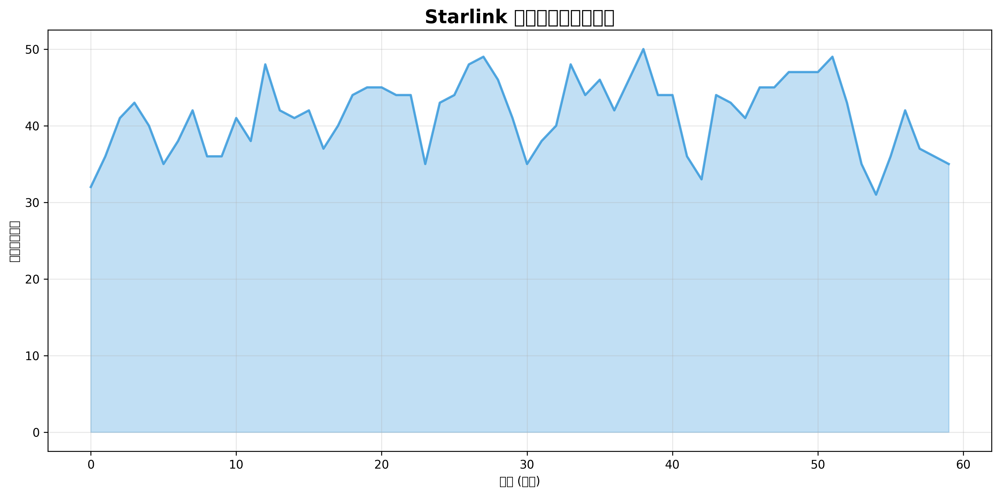

台北市Starlink衛星覆蓋分析報告
分析位置: 台北市 (緯度: 25.033, 經度: 121.5654)
分析時間: 2025-05-16 12:26:38 UTC
24小時覆蓋統計
35.8
平均可見衛星數量
53
最大可見衛星數量
17
最小可見衛星數量
100.0%
衛星覆蓋百分比
Handover統計
1421
24小時內Handover次數
1.0
平均Handover間隔(分鐘)
視覺化圖表
可見衛星數量時間線
最佳衛星仰角時間線

Handover時間線

互動式覆蓋熱力圖
Handover詳細資料
| 時間 (UTC) | From衛星 | To衛星 | From仰角 | To仰角 |
|---|---|---|---|---|
| 2025-05-16 12:17:00 | STARLINK-1591 | STARLINK-1675 | 76.93° | 81.98° |
| 2025-05-16 12:18:00 | STARLINK-1675 | STARLINK-30797 | 81.98° | 77.85° |
| 2025-05-16 12:19:00 | STARLINK-30797 | STARLINK-32642 | 77.85° | 74.26° |
| 2025-05-16 12:20:00 | STARLINK-32642 | STARLINK-32403 | 74.26° | 74.45° |
| 2025-05-16 12:21:00 | STARLINK-32403 | STARLINK-5344 | 74.45° | 69.00° |
| 2025-05-16 12:22:00 | STARLINK-5344 | STARLINK-31891 | 69.00° | 62.35° |
| 2025-05-16 12:23:00 | STARLINK-31891 | STARLINK-11314 [DTC] | 62.35° | 78.05° |
| 2025-05-16 12:24:00 | STARLINK-11314 [DTC] | STARLINK-2146 | 78.05° | 78.13° |
| 2025-05-16 12:25:00 | STARLINK-2146 | STARLINK-30524 | 78.13° | 77.35° |
| 2025-05-16 12:26:00 | STARLINK-30524 | STARLINK-32398 | 77.35° | 86.32° |
| 2025-05-16 12:27:00 | STARLINK-32398 | STARLINK-32763 | 86.32° | 75.67° |
| 2025-05-16 12:28:00 | STARLINK-32763 | STARLINK-30187 | 75.67° | 85.92° |
| 2025-05-16 12:29:00 | STARLINK-30187 | STARLINK-6047 | 85.92° | 65.70° |
| 2025-05-16 12:30:00 | STARLINK-6047 | STARLINK-32775 | 65.70° | 82.39° |
| 2025-05-16 12:31:00 | STARLINK-32775 | STARLINK-31887 | 82.39° | 78.02° |
| 2025-05-16 12:32:00 | STARLINK-31887 | STARLINK-3952 | 78.02° | 67.79° |
| 2025-05-16 12:33:00 | STARLINK-3952 | STARLINK-30204 | 67.79° | 81.48° |
| 2025-05-16 12:34:00 | STARLINK-30204 | STARLINK-31931 | 81.48° | 67.60° |
| 2025-05-16 12:35:00 | STARLINK-31931 | STARLINK-5706 | 67.60° | 77.37° |
| 2025-05-16 12:36:00 | STARLINK-5706 | STARLINK-30893 | 77.37° | 84.45° |
| 2025-05-16 12:37:00 | STARLINK-30893 | STARLINK-6052 | 84.45° | 74.02° |
| 2025-05-16 12:38:00 | STARLINK-6052 | STARLINK-31108 | 74.02° | 81.75° |
| 2025-05-16 12:39:00 | STARLINK-31108 | STARLINK-2224 | 81.75° | 82.84° |
| 2025-05-16 12:40:00 | STARLINK-2224 | STARLINK-5013 | 82.84° | 71.88° |
| 2025-05-16 12:41:00 | STARLINK-5013 | STARLINK-32384 | 71.88° | 82.26° |
| 2025-05-16 12:42:00 | STARLINK-32384 | STARLINK-32759 | 82.26° | 88.28° |
| 2025-05-16 12:43:00 | STARLINK-32759 | STARLINK-31076 | 88.28° | 87.71° |
| 2025-05-16 12:44:00 | STARLINK-31076 | STARLINK-32333 | 87.71° | 83.51° |
| 2025-05-16 12:45:00 | STARLINK-32333 | STARLINK-30233 | 83.51° | 81.79° |
| 2025-05-16 12:46:00 | STARLINK-30233 | STARLINK-6215 | 81.79° | 70.20° |
| 2025-05-16 12:47:00 | STARLINK-6215 | STARLINK-32567 | 70.20° | 76.48° |
| 2025-05-16 12:48:00 | STARLINK-32567 | STARLINK-31157 | 76.48° | 81.37° |
| 2025-05-16 12:49:00 | STARLINK-31157 | STARLINK-11461 [DTC] | 81.37° | 76.40° |
| 2025-05-16 12:50:00 | STARLINK-11461 [DTC] | STARLINK-30201 | 76.40° | 82.62° |
| 2025-05-16 12:51:00 | STARLINK-30201 | STARLINK-3919 | 82.62° | 77.78° |
| 2025-05-16 12:52:00 | STARLINK-3919 | STARLINK-32485 | 77.78° | 78.99° |
| 2025-05-16 12:53:00 | STARLINK-32485 | STARLINK-4706 | 78.99° | 82.44° |
| 2025-05-16 12:54:00 | STARLINK-4706 | STARLINK-32500 | 82.44° | 62.32° |
| 2025-05-16 12:55:00 | STARLINK-32500 | STARLINK-2342 | 62.32° | 78.37° |
| 2025-05-16 12:56:00 | STARLINK-2342 | STARLINK-4300 | 78.37° | 66.70° |
| 2025-05-16 12:57:00 | STARLINK-4300 | STARLINK-32301 | 66.70° | 81.46° |
| 2025-05-16 12:58:00 | STARLINK-32301 | STARLINK-31164 | 81.46° | 65.79° |
| 2025-05-16 12:59:00 | STARLINK-31164 | STARLINK-4664 | 65.79° | 64.73° |
| 2025-05-16 13:00:00 | STARLINK-4664 | STARLINK-32800 | 64.73° | 81.87° |
| 2025-05-16 13:01:00 | STARLINK-32800 | STARLINK-1614 | 81.87° | 72.92° |
| 2025-05-16 13:02:00 | STARLINK-1614 | STARLINK-30459 | 72.92° | 80.51° |
| 2025-05-16 13:03:00 | STARLINK-30459 | STARLINK-3191 | 80.51° | 80.29° |
| 2025-05-16 13:04:00 | STARLINK-3191 | STARLINK-2220 | 80.29° | 63.01° |
| 2025-05-16 13:05:00 | STARLINK-2220 | STARLINK-31188 | 63.01° | 85.68° |
| 2025-05-16 13:06:00 | STARLINK-31188 | STARLINK-32541 | 85.68° | 70.17° |
| 2025-05-16 13:07:00 | STARLINK-32541 | STARLINK-3312 | 70.17° | 81.33° |
| 2025-05-16 13:08:00 | STARLINK-3312 | STARLINK-32880 | 81.33° | 65.64° |
| 2025-05-16 13:09:00 | STARLINK-32880 | STARLINK-32865 | 65.64° | 83.97° |
| 2025-05-16 13:10:00 | STARLINK-32865 | STARLINK-30852 | 83.97° | 66.19° |
| 2025-05-16 13:11:00 | STARLINK-30852 | STARLINK-3182 | 66.19° | 82.76° |
| 2025-05-16 13:12:00 | STARLINK-3182 | STARLINK-5718 | 82.76° | 77.95° |
| 2025-05-16 13:13:00 | STARLINK-5718 | STARLINK-4169 | 77.95° | 68.96° |
| 2025-05-16 13:14:00 | STARLINK-4169 | STARLINK-4353 | 68.96° | 82.32° |
| 2025-05-16 13:15:00 | STARLINK-4353 | STARLINK-2221 | 82.32° | 79.49° |
| 2025-05-16 13:16:00 | STARLINK-2221 | STARLINK-3997 | 79.49° | 68.16° |
| 2025-05-16 13:17:00 | STARLINK-3997 | STARLINK-5720 | 68.16° | 84.90° |
| 2025-05-16 13:18:00 | STARLINK-5720 | STARLINK-32906 | 84.90° | 73.08° |
| 2025-05-16 13:19:00 | STARLINK-32906 | STARLINK-30859 | 73.08° | 78.89° |
| 2025-05-16 13:20:00 | STARLINK-30859 | STARLINK-32714 | 78.89° | 78.56° |
| 2025-05-16 13:21:00 | STARLINK-32714 | STARLINK-30897 | 78.56° | 66.17° |
| 2025-05-16 13:22:00 | STARLINK-30897 | STARLINK-5717 | 66.17° | 82.68° |
| 2025-05-16 13:23:00 | STARLINK-5717 | STARLINK-4788 | 82.68° | 75.48° |
| 2025-05-16 13:24:00 | STARLINK-4788 | STARLINK-32908 | 75.48° | 79.92° |
| 2025-05-16 13:25:00 | STARLINK-32908 | STARLINK-4014 | 79.92° | 86.93° |
| 2025-05-16 13:26:00 | STARLINK-4014 | STARLINK-11496 [DTC] | 86.93° | 79.46° |
| 2025-05-16 13:27:00 | STARLINK-11496 [DTC] | STARLINK-1664 | 79.46° | 71.26° |
| 2025-05-16 13:28:00 | STARLINK-1664 | STARLINK-4795 | 71.26° | 59.63° |
| 2025-05-16 13:30:00 | STARLINK-4795 | STARLINK-4017 | 76.83° | 66.68° |
| 2025-05-16 13:31:00 | STARLINK-4017 | STARLINK-2326 | 66.68° | 70.13° |
| 2025-05-16 13:32:00 | STARLINK-2326 | STARLINK-30379 | 70.13° | 76.41° |
| 2025-05-16 13:33:00 | STARLINK-30379 | STARLINK-3241 | 76.41° | 62.52° |
| 2025-05-16 13:34:00 | STARLINK-3241 | STARLINK-5778 | 62.52° | 81.05° |
| 2025-05-16 13:35:00 | STARLINK-5778 | STARLINK-32732 | 81.05° | 61.32° |
| 2025-05-16 13:36:00 | STARLINK-32732 | STARLINK-32457 | 61.32° | 69.50° |
| 2025-05-16 13:37:00 | STARLINK-32457 | STARLINK-30394 | 69.50° | 81.54° |
| 2025-05-16 13:38:00 | STARLINK-30394 | STARLINK-1312 | 81.54° | 81.70° |
| 2025-05-16 13:39:00 | STARLINK-1312 | STARLINK-3231 | 81.70° | 72.19° |
| 2025-05-16 13:40:00 | STARLINK-3231 | STARLINK-5600 | 72.19° | 67.28° |
| 2025-05-16 13:41:00 | STARLINK-5600 | STARLINK-32459 | 67.28° | 83.17° |
| 2025-05-16 13:42:00 | STARLINK-32459 | STARLINK-1156 | 83.17° | 80.71° |
| 2025-05-16 13:43:00 | STARLINK-1156 | STARLINK-3202 | 80.71° | 80.09° |
| 2025-05-16 13:44:00 | STARLINK-3202 | STARLINK-6297 | 80.09° | 80.99° |
| 2025-05-16 13:45:00 | STARLINK-6297 | STARLINK-2488 | 80.99° | 68.27° |
| 2025-05-16 13:46:00 | STARLINK-2488 | STARLINK-4459 | 68.27° | 75.49° |
| 2025-05-16 13:47:00 | STARLINK-4459 | STARLINK-4624 | 75.49° | 83.70° |
| 2025-05-16 13:48:00 | STARLINK-4624 | STARLINK-5232 | 83.70° | 89.55° |
| 2025-05-16 13:49:00 | STARLINK-5232 | STARLINK-5180 | 89.55° | 83.94° |
| 2025-05-16 13:50:00 | STARLINK-5180 | STARLINK-4334 | 83.94° | 69.52° |
| 2025-05-16 13:51:00 | STARLINK-4334 | STARLINK-2464 | 69.52° | 65.55° |
| 2025-05-16 13:52:00 | STARLINK-2464 | STARLINK-5050 | 65.55° | 80.61° |
| 2025-05-16 13:53:00 | STARLINK-5050 | STARLINK-4357 | 80.61° | 64.41° |
| 2025-05-16 13:54:00 | STARLINK-4357 | STARLINK-1873 | 64.41° | 77.38° |
| 2025-05-16 13:55:00 | STARLINK-1873 | STARLINK-5265 | 77.38° | 75.95° |
| 2025-05-16 13:56:00 | STARLINK-5265 | STARLINK-2430 | 75.95° | 88.63° |
| 2025-05-16 13:57:00 | STARLINK-2430 | STARLINK-3358 | 88.63° | 61.40° |
| 2025-05-16 13:58:00 | STARLINK-3358 | STARLINK-30227 | 61.40° | 65.66° |
| 2025-05-16 13:59:00 | STARLINK-30227 | STARLINK-32613 | 65.66° | 71.97° |
| 2025-05-16 14:00:00 | STARLINK-32613 | STARLINK-2455 | 71.97° | 78.56° |
| 2025-05-16 14:01:00 | STARLINK-2455 | STARLINK-4071 | 78.56° | 70.26° |
| 2025-05-16 14:02:00 | STARLINK-4071 | STARLINK-11194 [DTC] | 70.26° | 79.58° |
| 2025-05-16 14:03:00 | STARLINK-11194 [DTC] | STARLINK-30270 | 79.58° | 72.26° |
| 2025-05-16 14:04:00 | STARLINK-30270 | STARLINK-4767 | 72.26° | 76.10° |
| 2025-05-16 14:05:00 | STARLINK-4767 | STARLINK-32517 | 76.10° | 75.35° |
| 2025-05-16 14:06:00 | STARLINK-32517 | STARLINK-3972 | 75.35° | 83.53° |
| 2025-05-16 14:07:00 | STARLINK-3972 | STARLINK-2418 | 83.53° | 65.74° |
| 2025-05-16 14:08:00 | STARLINK-2418 | STARLINK-30269 | 65.74° | 75.73° |
| 2025-05-16 14:09:00 | STARLINK-30269 | STARLINK-5732 | 75.73° | 70.85° |
| 2025-05-16 14:11:00 | STARLINK-5732 | STARLINK-5738 | 65.86° | 84.73° |
| 2025-05-16 14:12:00 | STARLINK-5738 | STARLINK-1598 | 84.73° | 75.71° |
| 2025-05-16 14:13:00 | STARLINK-1598 | STARLINK-30169 | 75.71° | 80.88° |
| 2025-05-16 14:14:00 | STARLINK-30169 | STARLINK-1733 | 80.88° | 84.18° |
| 2025-05-16 14:15:00 | STARLINK-1733 | STARLINK-4794 | 84.18° | 67.86° |
| 2025-05-16 14:16:00 | STARLINK-4794 | STARLINK-5739 | 67.86° | 81.23° |
| 2025-05-16 14:17:00 | STARLINK-5739 | STARLINK-31805 | 81.23° | 80.70° |
| 2025-05-16 14:18:00 | STARLINK-31805 | STARLINK-6373 | 80.70° | 70.27° |
| 2025-05-16 14:19:00 | STARLINK-6373 | STARLINK-1728 | 70.27° | 71.74° |
| 2025-05-16 14:20:00 | STARLINK-1728 | STARLINK-32601 | 71.74° | 61.46° |
| 2025-05-16 14:21:00 | STARLINK-32601 | STARLINK-5749 | 61.46° | 73.34° |
| 2025-05-16 14:22:00 | STARLINK-5749 | STARLINK-3395 | 73.34° | 76.26° |
| 2025-05-16 14:23:00 | STARLINK-3395 | STARLINK-6321 | 76.26° | 77.15° |
| 2025-05-16 14:24:00 | STARLINK-6321 | STARLINK-3155 | 77.15° | 85.98° |
| 2025-05-16 14:25:00 | STARLINK-3155 | STARLINK-1714 | 85.98° | 71.91° |
| 2025-05-16 14:26:00 | STARLINK-1714 | STARLINK-31060 | 71.91° | 86.13° |
| 2025-05-16 14:27:00 | STARLINK-31060 | STARLINK-4775 | 86.13° | 63.12° |
| 2025-05-16 14:29:00 | STARLINK-4775 | STARLINK-3387 | 72.73° | 86.51° |
| 2025-05-16 14:30:00 | STARLINK-3387 | STARLINK-30182 | 86.51° | 68.97° |
| 2025-05-16 14:31:00 | STARLINK-30182 | STARLINK-6377 | 68.97° | 77.55° |
| 2025-05-16 14:32:00 | STARLINK-6377 | STARLINK-2452 | 77.55° | 74.06° |
| 2025-05-16 14:33:00 | STARLINK-2452 | STARLINK-4772 | 74.06° | 77.90° |
| 2025-05-16 14:34:00 | STARLINK-4772 | STARLINK-3370 | 77.90° | 62.25° |
| 2025-05-16 14:35:00 | STARLINK-3370 | STARLINK-30172 | 62.25° | 72.29° |
| 2025-05-16 14:36:00 | STARLINK-30172 | STARLINK-6316 | 72.29° | 74.97° |
| 2025-05-16 14:37:00 | STARLINK-6316 | STARLINK-2404 | 74.97° | 79.29° |
| 2025-05-16 14:39:00 | STARLINK-2404 | STARLINK-31717 | 57.61° | 71.18° |
| 2025-05-16 14:40:00 | STARLINK-31717 | STARLINK-4738 | 71.18° | 73.72° |
| 2025-05-16 14:41:00 | STARLINK-4738 | STARLINK-1812 | 73.72° | 82.33° |
| 2025-05-16 14:42:00 | STARLINK-1812 | STARLINK-4077 | 82.33° | 77.24° |
| 2025-05-16 14:43:00 | STARLINK-4077 | STARLINK-31291 | 77.24° | 83.78° |
| 2025-05-16 14:44:00 | STARLINK-31291 | STARLINK-31714 | 83.78° | 79.34° |
| 2025-05-16 14:45:00 | STARLINK-31714 | STARLINK-4760 | 79.34° | 70.67° |
| 2025-05-16 14:46:00 | STARLINK-4760 | STARLINK-31343 | 70.67° | 70.29° |
| 2025-05-16 14:47:00 | STARLINK-31343 | STARLINK-4045 | 70.29° | 76.60° |
| 2025-05-16 14:48:00 | STARLINK-4045 | STARLINK-5026 | 76.60° | 65.11° |
| 2025-05-16 14:49:00 | STARLINK-5026 | STARLINK-1700 | 65.11° | 69.19° |
| 2025-05-16 14:50:00 | STARLINK-1700 | STARLINK-30164 | 69.19° | 72.79° |
| 2025-05-16 14:51:00 | STARLINK-30164 | STARLINK-4756 | 72.79° | 81.85° |
| 2025-05-16 14:52:00 | STARLINK-4756 | STARLINK-3364 | 81.85° | 60.44° |
| 2025-05-16 14:53:00 | STARLINK-3364 | STARLINK-31279 | 60.44° | 72.40° |
| 2025-05-16 14:54:00 | STARLINK-31279 | STARLINK-31550 | 72.40° | 77.94° |
| 2025-05-16 14:55:00 | STARLINK-31550 | STARLINK-1300 | 77.94° | 85.73° |
| 2025-05-16 14:56:00 | STARLINK-1300 | STARLINK-4649 | 85.73° | 62.77° |
| 2025-05-16 14:57:00 | STARLINK-4649 | STARLINK-31600 | 62.77° | 68.94° |
| 2025-05-16 14:58:00 | STARLINK-31600 | STARLINK-5476 | 68.94° | 71.87° |
| 2025-05-16 14:59:00 | STARLINK-5476 | STARLINK-3507 | 71.87° | 70.62° |
| 2025-05-16 15:00:00 | STARLINK-3507 | STARLINK-30149 | 70.62° | 85.81° |
| 2025-05-16 15:01:00 | STARLINK-30149 | STARLINK-5236 | 85.81° | 62.59° |
| 2025-05-16 15:02:00 | STARLINK-5236 | STARLINK-5504 | 62.59° | 78.25° |
| 2025-05-16 15:03:00 | STARLINK-5504 | STARLINK-3501 | 78.25° | 75.61° |
| 2025-05-16 15:04:00 | STARLINK-3501 | STARLINK-1642 | 75.61° | 72.66° |
| 2025-05-16 15:05:00 | STARLINK-1642 | STARLINK-3342 | 72.66° | 85.68° |
| 2025-05-16 15:06:00 | STARLINK-3342 | STARLINK-5494 | 85.68° | 73.25° |
| 2025-05-16 15:07:00 | STARLINK-5494 | STARLINK-5481 | 73.25° | 76.85° |
| 2025-05-16 15:08:00 | STARLINK-5481 | STARLINK-31618 | 76.85° | 72.34° |
| 2025-05-16 15:09:00 | STARLINK-31618 | STARLINK-3512 | 72.34° | 77.71° |
| 2025-05-16 15:10:00 | STARLINK-3512 | STARLINK-3506 | 77.71° | 79.63° |
| 2025-05-16 15:11:00 | STARLINK-3506 | STARLINK-1882 | 79.63° | 73.66° |
| 2025-05-16 15:12:00 | STARLINK-1882 | STARLINK-30181 | 73.66° | 76.01° |
| 2025-05-16 15:13:00 | STARLINK-30181 | STARLINK-2414 | 76.01° | 83.72° |
| 2025-05-16 15:14:00 | STARLINK-2414 | STARLINK-11343 [DTC] | 83.72° | 77.92° |
| 2025-05-16 15:15:00 | STARLINK-11343 [DTC] | STARLINK-31572 | 77.92° | 73.96° |
| 2025-05-16 15:16:00 | STARLINK-31572 | STARLINK-3502 | 73.96° | 68.06° |
| 2025-05-16 15:17:00 | STARLINK-3502 | STARLINK-30178 | 68.06° | 81.60° |
| 2025-05-16 15:18:00 | STARLINK-30178 | STARLINK-2479 | 81.60° | 70.78° |
| 2025-05-16 15:19:00 | STARLINK-2479 | STARLINK-30215 | 70.78° | 68.81° |
| 2025-05-16 15:20:00 | STARLINK-30215 | STARLINK-5357 | 68.81° | 82.27° |
| 2025-05-16 15:21:00 | STARLINK-5357 | STARLINK-5054 | 82.27° | 79.08° |
| 2025-05-16 15:22:00 | STARLINK-5054 | STARLINK-30080 | 79.08° | 80.41° |
| 2025-05-16 15:23:00 | STARLINK-30080 | STARLINK-4106 | 80.41° | 84.30° |
| 2025-05-16 15:24:00 | STARLINK-4106 | STARLINK-32776 | 84.30° | 72.99° |
| 2025-05-16 15:25:00 | STARLINK-32776 | STARLINK-5150 | 72.99° | 76.96° |
| 2025-05-16 15:26:00 | STARLINK-5150 | STARLINK-5002 | 76.96° | 65.30° |
| 2025-05-16 15:27:00 | STARLINK-5002 | STARLINK-30068 | 65.30° | 74.54° |
| 2025-05-16 15:28:00 | STARLINK-30068 | STARLINK-31476 | 74.54° | 67.54° |
| 2025-05-16 15:29:00 | STARLINK-31476 | STARLINK-2153 | 67.54° | 71.24° |
| 2025-05-16 15:30:00 | STARLINK-2153 | STARLINK-3310 | 71.24° | 56.37° |
| 2025-05-16 15:31:00 | STARLINK-3310 | STARLINK-32795 | 56.37° | 79.56° |
| 2025-05-16 15:32:00 | STARLINK-32795 | STARLINK-5200 | 79.56° | 76.85° |
| 2025-05-16 15:33:00 | STARLINK-5200 | STARLINK-33714 | 76.85° | 59.63° |
| 2025-05-16 15:34:00 | STARLINK-33714 | STARLINK-4102 | 59.63° | 69.57° |
| 2025-05-16 15:35:00 | STARLINK-4102 | STARLINK-31356 | 69.57° | 80.37° |
| 2025-05-16 15:36:00 | STARLINK-31356 | STARLINK-33752 | 80.37° | 72.32° |
| 2025-05-16 15:37:00 | STARLINK-33752 | STARLINK-32909 | 72.32° | 70.51° |
| 2025-05-16 15:38:00 | STARLINK-32909 | STARLINK-32716 | 70.51° | 67.46° |
| 2025-05-16 15:39:00 | STARLINK-32716 | STARLINK-33632 | 67.46° | 76.87° |
| 2025-05-16 15:40:00 | STARLINK-33632 | STARLINK-32873 | 76.87° | 70.71° |
| 2025-05-16 15:41:00 | STARLINK-32873 | STARLINK-3314 | 70.71° | 75.07° |
| 2025-05-16 15:42:00 | STARLINK-3314 | STARLINK-30558 | 75.07° | 66.54° |
| 2025-05-16 15:43:00 | STARLINK-30558 | STARLINK-2634 | 66.54° | 67.99° |
| 2025-05-16 15:44:00 | STARLINK-2634 | STARLINK-31045 | 67.99° | 80.89° |
| 2025-05-16 15:45:00 | STARLINK-31045 | STARLINK-3451 | 80.89° | 62.46° |
| 2025-05-16 15:46:00 | STARLINK-3451 | STARLINK-3525 | 62.46° | 81.16° |
| 2025-05-16 15:47:00 | STARLINK-3525 | STARLINK-32841 | 81.16° | 81.53° |
| 2025-05-16 15:48:00 | STARLINK-32841 | STARLINK-30264 | 81.53° | 74.99° |
| 2025-05-16 15:49:00 | STARLINK-30264 | STARLINK-5520 | 74.99° | 81.90° |
| 2025-05-16 15:50:00 | STARLINK-5520 | STARLINK-31812 | 81.90° | 67.42° |
| 2025-05-16 15:51:00 | STARLINK-31812 | STARLINK-32829 | 67.42° | 63.67° |
| 2025-05-16 15:52:00 | STARLINK-32829 | STARLINK-1911 | 63.67° | 74.27° |
| 2025-05-16 15:53:00 | STARLINK-1911 | STARLINK-32959 | 74.27° | 82.52° |
| 2025-05-16 15:54:00 | STARLINK-32959 | STARLINK-2663 | 82.52° | 86.02° |
| 2025-05-16 15:55:00 | STARLINK-2663 | STARLINK-3514 | 86.02° | 64.99° |
| 2025-05-16 15:56:00 | STARLINK-3514 | STARLINK-31815 | 64.99° | 69.79° |
| 2025-05-16 15:57:00 | STARLINK-31815 | STARLINK-30585 | 69.79° | 68.05° |
| 2025-05-16 15:58:00 | STARLINK-30585 | STARLINK-1905 | 68.05° | 79.07° |
| 2025-05-16 15:59:00 | STARLINK-1905 | STARLINK-6330 | 79.07° | 74.50° |
| 2025-05-16 16:00:00 | STARLINK-6330 | STARLINK-2644 | 74.50° | 68.08° |
| 2025-05-16 16:01:00 | STARLINK-2644 | STARLINK-6368 | 68.08° | 71.13° |
| 2025-05-16 16:02:00 | STARLINK-6368 | STARLINK-5035 | 71.13° | 77.20° |
| 2025-05-16 16:03:00 | STARLINK-5035 | STARLINK-6154 | 77.20° | 65.33° |
| 2025-05-16 16:04:00 | STARLINK-6154 | STARLINK-4162 | 65.33° | 88.45° |
| 2025-05-16 16:05:00 | STARLINK-4162 | STARLINK-31432 | 88.45° | 69.06° |
| 2025-05-16 16:06:00 | STARLINK-31432 | STARLINK-6163 | 69.06° | 80.43° |
| 2025-05-16 16:07:00 | STARLINK-6163 | STARLINK-31824 | 80.43° | 73.95° |
| 2025-05-16 16:08:00 | STARLINK-31824 | STARLINK-5043 | 73.95° | 76.08° |
| 2025-05-16 16:09:00 | STARLINK-5043 | STARLINK-30036 | 76.08° | 81.74° |
| 2025-05-16 16:10:00 | STARLINK-30036 | STARLINK-4159 | 81.74° | 67.08° |
| 2025-05-16 16:11:00 | STARLINK-4159 | STARLINK-6167 | 67.08° | 82.20° |
| 2025-05-16 16:12:00 | STARLINK-6167 | STARLINK-1012 | 82.20° | 86.59° |
| 2025-05-16 16:13:00 | STARLINK-1012 | STARLINK-3824 | 86.59° | 83.40° |
| 2025-05-16 16:14:00 | STARLINK-3824 | STARLINK-3605 | 83.40° | 57.81° |
| 2025-05-16 16:15:00 | STARLINK-3605 | STARLINK-31872 | 57.81° | 86.97° |
| 2025-05-16 16:16:00 | STARLINK-31872 | STARLINK-6149 | 86.97° | 77.01° |
| 2025-05-16 16:17:00 | STARLINK-6149 | STARLINK-33809 | 77.01° | 74.13° |
| 2025-05-16 16:18:00 | STARLINK-33809 | STARLINK-33819 | 74.13° | 63.27° |
| 2025-05-16 16:19:00 | STARLINK-33819 | STARLINK-30124 | 63.27° | 72.91° |
| 2025-05-16 16:20:00 | STARLINK-30124 | STARLINK-3599 | 72.91° | 76.48° |
| 2025-05-16 16:21:00 | STARLINK-3599 | STARLINK-31946 | 76.48° | 77.21° |
| 2025-05-16 16:22:00 | STARLINK-31946 | STARLINK-3800 | 77.21° | 83.85° |
| 2025-05-16 16:23:00 | STARLINK-3800 | STARLINK-32929 | 83.85° | 73.15° |
| 2025-05-16 16:24:00 | STARLINK-32929 | STARLINK-2722 | 73.15° | 68.79° |
| 2025-05-16 16:25:00 | STARLINK-2722 | STARLINK-5811 | 68.79° | 80.55° |
| 2025-05-16 16:26:00 | STARLINK-5811 | STARLINK-5298 | 80.55° | 80.73° |
| 2025-05-16 16:27:00 | STARLINK-5298 | STARLINK-3767 | 80.73° | 72.06° |
| 2025-05-16 16:28:00 | STARLINK-3767 | STARLINK-30430 | 72.06° | 80.24° |
| 2025-05-16 16:29:00 | STARLINK-30430 | STARLINK-4144 | 80.24° | 57.21° |
| 2025-05-16 16:30:00 | STARLINK-4144 | STARLINK-2697 | 57.21° | 78.23° |
| 2025-05-16 16:31:00 | STARLINK-2697 | STARLINK-5818 | 78.23° | 82.14° |
| 2025-05-16 16:32:00 | STARLINK-5818 | STARLINK-5310 | 82.14° | 83.01° |
| 2025-05-16 16:33:00 | STARLINK-5310 | STARLINK-5772 | 83.01° | 73.71° |
| 2025-05-16 16:34:00 | STARLINK-5772 | STARLINK-33549 | 73.71° | 68.31° |
| 2025-05-16 16:35:00 | STARLINK-33549 | STARLINK-2687 | 68.31° | 75.42° |
| 2025-05-16 16:36:00 | STARLINK-2687 | STARLINK-32791 | 75.42° | 75.26° |
| 2025-05-16 16:37:00 | STARLINK-32791 | STARLINK-5825 | 75.26° | 67.17° |
| 2025-05-16 16:38:00 | STARLINK-5825 | STARLINK-5175 | 67.17° | 69.14° |
| 2025-05-16 16:39:00 | STARLINK-5175 | STARLINK-2292 | 69.14° | 84.23° |
| 2025-05-16 16:40:00 | STARLINK-2292 | STARLINK-30962 | 84.23° | 78.14° |
| 2025-05-16 16:41:00 | STARLINK-30962 | STARLINK-5774 | 78.14° | 72.20° |
| 2025-05-16 16:43:00 | STARLINK-5774 | STARLINK-30931 | 65.33° | 85.48° |
| 2025-05-16 16:44:00 | STARLINK-30931 | STARLINK-1575 | 85.48° | 64.35° |
| 2025-05-16 16:45:00 | STARLINK-1575 | STARLINK-4142 | 64.35° | 80.99° |
| 2025-05-16 16:46:00 | STARLINK-4142 | STARLINK-31719 | 80.99° | 73.17° |
| 2025-05-16 16:47:00 | STARLINK-31719 | STARLINK-5770 | 73.17° | 65.43° |
| 2025-05-16 16:48:00 | STARLINK-5770 | STARLINK-5783 | 65.43° | 79.56° |
| 2025-05-16 16:49:00 | STARLINK-5783 | STARLINK-31728 | 79.56° | 78.34° |
| 2025-05-16 16:50:00 | STARLINK-31728 | STARLINK-30976 | 78.34° | 73.69° |
| 2025-05-16 16:51:00 | STARLINK-30976 | STARLINK-33736 | 73.69° | 87.74° |
| 2025-05-16 16:52:00 | STARLINK-33736 | STARLINK-3754 | 87.74° | 66.76° |
| 2025-05-16 16:53:00 | STARLINK-3754 | STARLINK-5571 | 66.76° | 79.02° |
| 2025-05-16 16:54:00 | STARLINK-5571 | STARLINK-33756 | 79.02° | 73.66° |
| 2025-05-16 16:55:00 | STARLINK-33756 | STARLINK-31723 | 73.66° | 72.93° |
| 2025-05-16 16:56:00 | STARLINK-31723 | STARLINK-33768 | 72.93° | 70.92° |
| 2025-05-16 16:57:00 | STARLINK-33768 | STARLINK-5665 | 70.92° | 67.13° |
| 2025-05-16 16:58:00 | STARLINK-5665 | STARLINK-5625 | 67.13° | 79.43° |
| 2025-05-16 16:59:00 | STARLINK-5625 | STARLINK-1513 | 79.43° | 70.72° |
| 2025-05-16 17:00:00 | STARLINK-1513 | STARLINK-11118 [DTC] | 70.72° | 74.12° |
| 2025-05-16 17:01:00 | STARLINK-11118 [DTC] | STARLINK-31750 | 74.12° | 82.15° |
| 2025-05-16 17:02:00 | STARLINK-31750 | STARLINK-31216 | 82.15° | 69.47° |
| 2025-05-16 17:03:00 | STARLINK-31216 | STARLINK-4056 | 69.47° | 89.35° |
| 2025-05-16 17:04:00 | STARLINK-4056 | STARLINK-1482 | 89.35° | 64.62° |
| 2025-05-16 17:05:00 | STARLINK-1482 | STARLINK-11659 [DTC] | 64.62° | 74.56° |
| 2025-05-16 17:06:00 | STARLINK-11659 [DTC] | STARLINK-30433 | 74.56° | 65.77° |
| 2025-05-16 17:07:00 | STARLINK-30433 | STARLINK-3629 | 65.77° | 73.56° |
| 2025-05-16 17:08:00 | STARLINK-3629 | STARLINK-3625 | 73.56° | 83.46° |
| 2025-05-16 17:09:00 | STARLINK-3625 | STARLINK-2576 | 83.46° | 74.42° |
| 2025-05-16 17:10:00 | STARLINK-2576 | STARLINK-31522 | 74.42° | 79.37° |
| 2025-05-16 17:11:00 | STARLINK-31522 | STARLINK-2706 | 79.37° | 83.95° |
| 2025-05-16 17:12:00 | STARLINK-2706 | STARLINK-4378 | 83.95° | 70.50° |
| 2025-05-16 17:13:00 | STARLINK-4378 | STARLINK-31603 | 70.50° | 87.16° |
| 2025-05-16 17:14:00 | STARLINK-31603 | STARLINK-4316 | 87.16° | 76.10° |
| 2025-05-16 17:15:00 | STARLINK-4316 | STARLINK-2587 | 76.10° | 73.40° |
| 2025-05-16 17:16:00 | STARLINK-2587 | STARLINK-31492 | 73.40° | 77.77° |
| 2025-05-16 17:17:00 | STARLINK-31492 | STARLINK-4447 | 77.77° | 85.33° |
| 2025-05-16 17:18:00 | STARLINK-4447 | STARLINK-4400 | 85.33° | 66.88° |
| 2025-05-16 17:19:00 | STARLINK-4400 | STARLINK-31355 | 66.88° | 77.54° |
| 2025-05-16 17:20:00 | STARLINK-31355 | STARLINK-2588 | 77.54° | 78.37° |
| 2025-05-16 17:21:00 | STARLINK-2588 | STARLINK-5130 | 78.37° | 79.00° |
| 2025-05-16 17:22:00 | STARLINK-5130 | STARLINK-32199 | 79.00° | 89.07° |
| 2025-05-16 17:23:00 | STARLINK-32199 | STARLINK-31380 | 89.07° | 63.73° |
| 2025-05-16 17:24:00 | STARLINK-31380 | STARLINK-5941 | 63.73° | 71.56° |
| 2025-05-16 17:25:00 | STARLINK-5941 | STARLINK-11629 [DTC] | 71.56° | 75.07° |
| 2025-05-16 17:26:00 | STARLINK-11629 [DTC] | STARLINK-31447 | 75.07° | 83.77° |
| 2025-05-16 17:27:00 | STARLINK-31447 | STARLINK-30895 | 83.77° | 80.15° |
| 2025-05-16 17:28:00 | STARLINK-30895 | STARLINK-31339 | 80.15° | 69.26° |
| 2025-05-16 17:29:00 | STARLINK-31339 | STARLINK-1068 | 69.26° | 81.49° |
| 2025-05-16 17:30:00 | STARLINK-1068 | STARLINK-5151 | 81.49° | 78.63° |
| 2025-05-16 17:31:00 | STARLINK-5151 | STARLINK-32189 | 78.63° | 60.30° |
| 2025-05-16 17:32:00 | STARLINK-32189 | STARLINK-30900 | 60.30° | 86.52° |
| 2025-05-16 17:33:00 | STARLINK-30900 | STARLINK-3792 | 86.52° | 71.96° |
| 2025-05-16 17:34:00 | STARLINK-3792 | STARLINK-5794 | 71.96° | 78.45° |
| 2025-05-16 17:35:00 | STARLINK-5794 | STARLINK-5964 | 78.45° | 70.57° |
| 2025-05-16 17:37:00 | STARLINK-5964 | STARLINK-30922 | 65.47° | 81.52° |
| 2025-05-16 17:38:00 | STARLINK-30922 | STARLINK-31504 | 81.52° | 66.74° |
| 2025-05-16 17:39:00 | STARLINK-31504 | STARLINK-5806 | 66.74° | 75.29° |
| 2025-05-16 17:40:00 | STARLINK-5806 | STARLINK-1060 | 75.29° | 72.50° |
| 2025-05-16 17:41:00 | STARLINK-1060 | STARLINK-2159 | 72.50° | 67.15° |
| 2025-05-16 17:42:00 | STARLINK-2159 | STARLINK-30949 | 67.15° | 74.22° |
| 2025-05-16 17:43:00 | STARLINK-30949 | STARLINK-5809 | 74.22° | 75.24° |
| 2025-05-16 17:44:00 | STARLINK-5809 | STARLINK-3136 | 75.24° | 83.81° |
| 2025-05-16 17:45:00 | STARLINK-3136 | STARLINK-4786 | 83.81° | 62.10° |
| 2025-05-16 17:46:00 | STARLINK-4786 | STARLINK-30594 | 62.10° | 73.88° |
| 2025-05-16 17:47:00 | STARLINK-30594 | STARLINK-5658 | 73.88° | 79.87° |
| 2025-05-16 17:48:00 | STARLINK-5658 | STARLINK-3637 | 79.87° | 78.14° |
| 2025-05-16 17:49:00 | STARLINK-3637 | STARLINK-5812 | 78.14° | 70.97° |
| 2025-05-16 17:50:00 | STARLINK-5812 | STARLINK-2643 | 70.97° | 71.83° |
| 2025-05-16 17:51:00 | STARLINK-2643 | STARLINK-30606 | 71.83° | 77.71° |
| 2025-05-16 17:52:00 | STARLINK-30606 | STARLINK-11397 [DTC] | 77.71° | 75.53° |
| 2025-05-16 17:53:00 | STARLINK-11397 [DTC] | STARLINK-3573 | 75.53° | 68.19° |
| 2025-05-16 17:54:00 | STARLINK-3573 | STARLINK-32433 | 68.19° | 75.38° |
| 2025-05-16 17:55:00 | STARLINK-32433 | STARLINK-11177 [DTC] | 75.38° | 68.29° |
| 2025-05-16 17:56:00 | STARLINK-11177 [DTC] | STARLINK-2631 | 68.29° | 82.95° |
| 2025-05-16 17:57:00 | STARLINK-2631 | STARLINK-31330 | 82.95° | 64.62° |
| 2025-05-16 17:58:00 | STARLINK-31330 | STARLINK-32394 | 64.62° | 77.75° |
| 2025-05-16 17:59:00 | STARLINK-32394 | STARLINK-5652 | 77.75° | 76.88° |
| 2025-05-16 18:00:00 | STARLINK-5652 | STARLINK-11535 [DTC] | 76.88° | 84.89° |
| 2025-05-16 18:01:00 | STARLINK-11535 [DTC] | STARLINK-2598 | 84.89° | 69.22° |
| 2025-05-16 18:02:00 | STARLINK-2598 | STARLINK-5114 | 69.22° | 85.55° |
| 2025-05-16 18:03:00 | STARLINK-5114 | STARLINK-32170 | 85.55° | 83.33° |
| 2025-05-16 18:04:00 | STARLINK-32170 | STARLINK-32486 | 83.33° | 71.81° |
| 2025-05-16 18:05:00 | STARLINK-32486 | STARLINK-2330 | 71.81° | 64.95° |
| 2025-05-16 18:06:00 | STARLINK-2330 | STARLINK-5268 | 64.95° | 70.93° |
| 2025-05-16 18:07:00 | STARLINK-5268 | STARLINK-2604 | 70.93° | 68.17° |
| 2025-05-16 18:08:00 | STARLINK-2604 | STARLINK-32223 | 68.17° | 79.32° |
| 2025-05-16 18:09:00 | STARLINK-32223 | STARLINK-30540 | 79.32° | 61.98° |
| 2025-05-16 18:10:00 | STARLINK-30540 | STARLINK-1464 | 61.98° | 86.32° |
| 2025-05-16 18:11:00 | STARLINK-1464 | STARLINK-32855 | 86.32° | 77.49° |
| 2025-05-16 18:12:00 | STARLINK-32855 | STARLINK-11191 [DTC] | 77.49° | 86.37° |
| 2025-05-16 18:13:00 | STARLINK-11191 [DTC] | STARLINK-32270 | 86.37° | 80.99° |
| 2025-05-16 18:14:00 | STARLINK-32270 | STARLINK-2608 | 80.99° | 77.50° |
| 2025-05-16 18:15:00 | STARLINK-2608 | STARLINK-31354 | 77.50° | 60.55° |
| 2025-05-16 18:16:00 | STARLINK-31354 | STARLINK-32220 | 60.55° | 80.46° |
| 2025-05-16 18:17:00 | STARLINK-32220 | STARLINK-31921 | 80.46° | 62.05° |
| 2025-05-16 18:18:00 | STARLINK-31921 | STARLINK-3577 | 62.05° | 75.18° |
| 2025-05-16 18:19:00 | STARLINK-3577 | STARLINK-1765 | 75.18° | 76.30° |
| 2025-05-16 18:20:00 | STARLINK-1765 | STARLINK-5148 | 76.30° | 77.83° |
| 2025-05-16 18:21:00 | STARLINK-5148 | STARLINK-5961 | 77.83° | 85.18° |
| 2025-05-16 18:22:00 | STARLINK-5961 | STARLINK-30990 | 85.18° | 66.99° |
| 2025-05-16 18:23:00 | STARLINK-30990 | STARLINK-3572 | 66.99° | 71.47° |
| 2025-05-16 18:24:00 | STARLINK-3572 | STARLINK-30520 | 71.47° | 71.16° |
| 2025-05-16 18:25:00 | STARLINK-30520 | STARLINK-3127 | 71.16° | 76.48° |
| 2025-05-16 18:26:00 | STARLINK-3127 | STARLINK-5971 | 76.48° | 83.58° |
| 2025-05-16 18:27:00 | STARLINK-5971 | STARLINK-31747 | 83.58° | 68.67° |
| 2025-05-16 18:28:00 | STARLINK-31747 | STARLINK-31213 | 68.67° | 72.99° |
| 2025-05-16 18:29:00 | STARLINK-31213 | STARLINK-3576 | 72.99° | 80.91° |
| 2025-05-16 18:30:00 | STARLINK-3576 | STARLINK-3570 | 80.91° | 69.99° |
| 2025-05-16 18:31:00 | STARLINK-3570 | STARLINK-5805 | 69.99° | 76.53° |
| 2025-05-16 18:32:00 | STARLINK-5805 | STARLINK-4468 | 76.53° | 69.72° |
| 2025-05-16 18:33:00 | STARLINK-4468 | STARLINK-31201 | 69.72° | 74.28° |
| 2025-05-16 18:34:00 | STARLINK-31201 | STARLINK-31683 | 74.28° | 83.26° |
| 2025-05-16 18:35:00 | STARLINK-31683 | STARLINK-31212 | 83.26° | 74.55° |
| 2025-05-16 18:36:00 | STARLINK-31212 | STARLINK-30477 | 74.55° | 81.37° |
| 2025-05-16 18:37:00 | STARLINK-30477 | STARLINK-2578 | 81.37° | 84.58° |
| 2025-05-16 18:38:00 | STARLINK-2578 | STARLINK-5578 | 84.58° | 78.85° |
| 2025-05-16 18:39:00 | STARLINK-5578 | STARLINK-11087 [DTC] | 78.85° | 67.04° |
| 2025-05-16 18:40:00 | STARLINK-11087 [DTC] | STARLINK-31697 | 67.04° | 84.37° |
| 2025-05-16 18:41:00 | STARLINK-31697 | STARLINK-30453 | 84.37° | 84.48° |
| 2025-05-16 18:42:00 | STARLINK-30453 | STARLINK-11536 [DTC] | 84.48° | 64.26° |
| 2025-05-16 18:43:00 | STARLINK-11536 [DTC] | STARLINK-4635 | 64.26° | 85.65° |
| 2025-05-16 18:44:00 | STARLINK-4635 | STARLINK-1209 | 85.65° | 66.24° |
| 2025-05-16 18:45:00 | STARLINK-1209 | STARLINK-2143 | 66.24° | 54.07° |
| 2025-05-16 18:46:00 | STARLINK-2143 | STARLINK-30464 | 54.07° | 78.05° |
| 2025-05-16 18:47:00 | STARLINK-30464 | STARLINK-5256 | 78.05° | 76.59° |
| 2025-05-16 18:48:00 | STARLINK-5256 | STARLINK-32947 | 76.59° | 85.09° |
| 2025-05-16 18:49:00 | STARLINK-32947 | STARLINK-32147 | 85.09° | 79.00° |
| 2025-05-16 18:50:00 | STARLINK-32147 | STARLINK-11358 [DTC] | 79.00° | 81.83° |
| 2025-05-16 18:51:00 | STARLINK-11358 [DTC] | STARLINK-30463 | 81.83° | 70.81° |
| 2025-05-16 18:52:00 | STARLINK-30463 | STARLINK-31230 | 70.81° | 79.22° |
| 2025-05-16 18:53:00 | STARLINK-31230 | STARLINK-3566 | 79.22° | 61.08° |
| 2025-05-16 18:54:00 | STARLINK-3566 | STARLINK-4633 | 61.08° | 64.72° |
| 2025-05-16 18:55:00 | STARLINK-4633 | STARLINK-2114 | 64.72° | 83.68° |
| 2025-05-16 18:56:00 | STARLINK-2114 | STARLINK-31320 | 83.68° | 72.09° |
| 2025-05-16 18:57:00 | STARLINK-31320 | STARLINK-32050 | 72.09° | 81.06° |
| 2025-05-16 18:58:00 | STARLINK-32050 | STARLINK-11478 [DTC] | 81.06° | 78.38° |
| 2025-05-16 18:59:00 | STARLINK-11478 [DTC] | STARLINK-33572 | 78.38° | 81.67° |
| 2025-05-16 19:00:00 | STARLINK-33572 | STARLINK-30598 | 81.67° | 72.78° |
| 2025-05-16 19:01:00 | STARLINK-30598 | STARLINK-3121 | 72.78° | 85.14° |
| 2025-05-16 19:02:00 | STARLINK-3121 | STARLINK-5601 | 85.14° | 78.78° |
| 2025-05-16 19:03:00 | STARLINK-5601 | STARLINK-5068 | 78.78° | 73.65° |
| 2025-05-16 19:04:00 | STARLINK-5068 | STARLINK-32392 | 73.65° | 72.96° |
| 2025-05-16 19:05:00 | STARLINK-32392 | STARLINK-30613 | 72.96° | 79.35° |
| 2025-05-16 19:06:00 | STARLINK-30613 | STARLINK-1247 | 79.35° | 66.19° |
| 2025-05-16 19:07:00 | STARLINK-1247 | STARLINK-33591 | 66.19° | 77.38° |
| 2025-05-16 19:08:00 | STARLINK-33591 | STARLINK-5602 | 77.38° | 82.44° |
| 2025-05-16 19:09:00 | STARLINK-5602 | STARLINK-5645 | 82.44° | 86.36° |
| 2025-05-16 19:10:00 | STARLINK-5645 | STARLINK-6192 | 86.36° | 85.25° |
| 2025-05-16 19:11:00 | STARLINK-6192 | STARLINK-11652 [DTC] | 85.25° | 84.75° |
| 2025-05-16 19:12:00 | STARLINK-11652 [DTC] | STARLINK-30223 | 84.75° | 76.99° |
| 2025-05-16 19:13:00 | STARLINK-30223 | STARLINK-6203 | 76.99° | 72.48° |
| 2025-05-16 19:14:00 | STARLINK-6203 | STARLINK-33630 | 72.48° | 79.84° |
| 2025-05-16 19:15:00 | STARLINK-33630 | STARLINK-30604 | 79.84° | 79.12° |
| 2025-05-16 19:16:00 | STARLINK-30604 | STARLINK-33766 | 79.12° | 71.07° |
| 2025-05-16 19:17:00 | STARLINK-33766 | STARLINK-30138 | 71.07° | 78.53° |
| 2025-05-16 19:18:00 | STARLINK-30138 | STARLINK-6202 | 78.53° | 69.69° |
| 2025-05-16 19:19:00 | STARLINK-6202 | STARLINK-31416 | 69.69° | 85.35° |
| 2025-05-16 19:20:00 | STARLINK-31416 | STARLINK-30597 | 85.35° | 72.61° |
| 2025-05-16 19:21:00 | STARLINK-30597 | STARLINK-33679 | 72.61° | 73.10° |
| 2025-05-16 19:22:00 | STARLINK-33679 | STARLINK-30218 | 73.10° | 74.43° |
| 2025-05-16 19:23:00 | STARLINK-30218 | STARLINK-33731 | 74.43° | 83.04° |
| 2025-05-16 19:24:00 | STARLINK-33731 | STARLINK-4573 | 83.04° | 77.95° |
| 2025-05-16 19:25:00 | STARLINK-4573 | STARLINK-31555 | 77.95° | 78.89° |
| 2025-05-16 19:26:00 | STARLINK-31555 | STARLINK-5672 | 78.89° | 58.06° |
| 2025-05-16 19:28:00 | STARLINK-5672 | STARLINK-4200 | 77.94° | 79.62° |
| 2025-05-16 19:29:00 | STARLINK-4200 | STARLINK-30496 | 79.62° | 65.25° |
| 2025-05-16 19:30:00 | STARLINK-30496 | STARLINK-5676 | 65.25° | 84.22° |
| 2025-05-16 19:31:00 | STARLINK-5676 | STARLINK-1719 | 84.22° | 70.47° |
| 2025-05-16 19:32:00 | STARLINK-1719 | STARLINK-5681 | 70.47° | 81.09° |
| 2025-05-16 19:33:00 | STARLINK-5681 | STARLINK-32592 | 81.09° | 81.84° |
| 2025-05-16 19:34:00 | STARLINK-32592 | STARLINK-31571 | 81.84° | 57.97° |
| 2025-05-16 19:35:00 | STARLINK-31571 | STARLINK-5674 | 57.97° | 79.86° |
| 2025-05-16 19:36:00 | STARLINK-5674 | STARLINK-1762 | 79.86° | 82.78° |
| 2025-05-16 19:37:00 | STARLINK-1762 | STARLINK-32653 | 82.78° | 89.31° |
| 2025-05-16 19:38:00 | STARLINK-32653 | STARLINK-31210 | 89.31° | 74.85° |
| 2025-05-16 19:39:00 | STARLINK-31210 | STARLINK-30501 | 74.85° | 67.74° |
| 2025-05-16 19:40:00 | STARLINK-30501 | STARLINK-3545 | 67.74° | 80.35° |
| 2025-05-16 19:41:00 | STARLINK-3545 | STARLINK-3060 | 80.35° | 78.34° |
| 2025-05-16 19:42:00 | STARLINK-3060 | STARLINK-3235 | 78.34° | 86.59° |
| 2025-05-16 19:43:00 | STARLINK-3235 | STARLINK-32496 | 86.59° | 74.14° |
| 2025-05-16 19:44:00 | STARLINK-32496 | STARLINK-32603 | 74.14° | 84.61° |
| 2025-05-16 19:45:00 | STARLINK-32603 | STARLINK-32430 | 84.61° | 72.34° |
| 2025-05-16 19:46:00 | STARLINK-32430 | STARLINK-3563 | 72.34° | 74.03° |
| 2025-05-16 19:47:00 | STARLINK-3563 | STARLINK-3072 | 74.03° | 84.94° |
| 2025-05-16 19:48:00 | STARLINK-3072 | STARLINK-4591 | 84.94° | 62.71° |
| 2025-05-16 19:49:00 | STARLINK-4591 | STARLINK-4673 | 62.71° | 64.35° |
| 2025-05-16 19:50:00 | STARLINK-4673 | STARLINK-31234 | 64.35° | 63.95° |
| 2025-05-16 19:51:00 | STARLINK-31234 | STARLINK-32668 | 63.95° | 83.62° |
| 2025-05-16 19:52:00 | STARLINK-32668 | STARLINK-6251 | 83.62° | 66.30° |
| 2025-05-16 19:53:00 | STARLINK-6251 | STARLINK-3700 | 66.30° | 70.13° |
| 2025-05-16 19:54:00 | STARLINK-3700 | STARLINK-32655 | 70.13° | 61.42° |
| 2025-05-16 19:55:00 | STARLINK-32655 | STARLINK-2069 | 61.42° | 76.70° |
| 2025-05-16 19:56:00 | STARLINK-2069 | STARLINK-1807 | 76.70° | 74.77° |
| 2025-05-16 19:57:00 | STARLINK-1807 | STARLINK-6232 | 74.77° | 70.10° |
| 2025-05-16 19:58:00 | STARLINK-6232 | STARLINK-4126 | 70.10° | 79.25° |
| 2025-05-16 19:59:00 | STARLINK-4126 | STARLINK-30311 | 79.25° | 79.16° |
| 2025-05-16 20:00:00 | STARLINK-30311 | STARLINK-4716 | 79.16° | 83.56° |
| 2025-05-16 20:01:00 | STARLINK-4716 | STARLINK-4672 | 83.56° | 78.46° |
| 2025-05-16 20:02:00 | STARLINK-4672 | STARLINK-31581 | 78.46° | 67.68° |
| 2025-05-16 20:03:00 | STARLINK-31581 | STARLINK-32690 | 67.68° | 80.96° |
| 2025-05-16 20:04:00 | STARLINK-32690 | STARLINK-6253 | 80.96° | 86.70° |
| 2025-05-16 20:05:00 | STARLINK-6253 | STARLINK-32663 | 86.70° | 79.91° |
| 2025-05-16 20:06:00 | STARLINK-32663 | STARLINK-1199 | 79.91° | 70.25° |
| 2025-05-16 20:07:00 | STARLINK-1199 | STARLINK-6257 | 70.25° | 71.18° |
| 2025-05-16 20:08:00 | STARLINK-6257 | STARLINK-1184 | 71.18° | 83.65° |
| 2025-05-16 20:09:00 | STARLINK-1184 | STARLINK-30330 | 83.65° | 82.98° |
| 2025-05-16 20:10:00 | STARLINK-30330 | STARLINK-5424 | 82.98° | 67.32° |
| 2025-05-16 20:11:00 | STARLINK-5424 | STARLINK-4689 | 67.32° | 68.62° |
| 2025-05-16 20:12:00 | STARLINK-4689 | STARLINK-3245 | 68.62° | 72.14° |
| 2025-05-16 20:13:00 | STARLINK-3245 | STARLINK-11666 [DTC] | 72.14° | 81.72° |
| 2025-05-16 20:14:00 | STARLINK-11666 [DTC] | STARLINK-5757 | 81.72° | 78.18° |
| 2025-05-16 20:15:00 | STARLINK-5757 | STARLINK-32671 | 78.18° | 72.03° |
| 2025-05-16 20:16:00 | STARLINK-32671 | STARLINK-30140 | 72.03° | 73.61° |
| 2025-05-16 20:17:00 | STARLINK-30140 | STARLINK-31569 | 73.61° | 71.31° |
| 2025-05-16 20:18:00 | STARLINK-31569 | STARLINK-3291 | 71.31° | 72.60° |
| 2025-05-16 20:19:00 | STARLINK-3291 | STARLINK-3305 | 72.60° | 86.52° |
| 2025-05-16 20:20:00 | STARLINK-3305 | STARLINK-5895 | 86.52° | 74.99° |
| 2025-05-16 20:21:00 | STARLINK-5895 | STARLINK-30165 | 74.99° | 79.90° |
| 2025-05-16 20:22:00 | STARLINK-30165 | STARLINK-5748 | 79.90° | 69.85° |
| 2025-05-16 20:23:00 | STARLINK-5748 | STARLINK-4683 | 69.85° | 77.43° |
| 2025-05-16 20:24:00 | STARLINK-4683 | STARLINK-5366 | 77.43° | 81.03° |
| 2025-05-16 20:25:00 | STARLINK-5366 | STARLINK-32563 | 81.03° | 80.84° |
| 2025-05-16 20:26:00 | STARLINK-32563 | STARLINK-2399 | 80.84° | 82.60° |
| 2025-05-16 20:27:00 | STARLINK-2399 | STARLINK-5448 | 82.60° | 78.50° |
| 2025-05-16 20:28:00 | STARLINK-5448 | STARLINK-3672 | 78.50° | 78.54° |
| 2025-05-16 20:29:00 | STARLINK-3672 | STARLINK-3277 | 78.54° | 64.69° |
| 2025-05-16 20:30:00 | STARLINK-3277 | STARLINK-30267 | 64.69° | 70.21° |
| 2025-05-16 20:31:00 | STARLINK-30267 | STARLINK-30503 | 70.21° | 75.86° |
| 2025-05-16 20:32:00 | STARLINK-30503 | STARLINK-2424 | 75.86° | 67.01° |
| 2025-05-16 20:33:00 | STARLINK-2424 | STARLINK-30298 | 67.01° | 67.66° |
| 2025-05-16 20:34:00 | STARLINK-30298 | STARLINK-3671 | 67.66° | 75.74° |
| 2025-05-16 20:35:00 | STARLINK-3671 | STARLINK-30296 | 75.74° | 87.20° |
| 2025-05-16 20:36:00 | STARLINK-30296 | STARLINK-2408 | 87.20° | 67.47° |
| 2025-05-16 20:37:00 | STARLINK-2408 | STARLINK-31762 | 67.47° | 74.50° |
| 2025-05-16 20:38:00 | STARLINK-31762 | STARLINK-11453 [DTC] | 74.50° | 78.70° |
| 2025-05-16 20:39:00 | STARLINK-11453 [DTC] | STARLINK-4046 | 78.70° | 81.67° |
| 2025-05-16 20:40:00 | STARLINK-4046 | STARLINK-30295 | 81.67° | 73.74° |
| 2025-05-16 20:41:00 | STARLINK-30295 | STARLINK-4705 | 73.74° | 83.68° |
| 2025-05-16 20:42:00 | STARLINK-4705 | STARLINK-32544 | 83.68° | 75.11° |
| 2025-05-16 20:43:00 | STARLINK-32544 | STARLINK-30316 | 75.11° | 72.98° |
| 2025-05-16 20:44:00 | STARLINK-30316 | STARLINK-32609 | 72.98° | 84.55° |
| 2025-05-16 20:45:00 | STARLINK-32609 | STARLINK-31902 | 84.55° | 85.46° |
| 2025-05-16 20:46:00 | STARLINK-31902 | STARLINK-11462 [DTC] | 85.46° | 80.52° |
| 2025-05-16 20:47:00 | STARLINK-11462 [DTC] | STARLINK-1411 | 80.52° | 65.67° |
| 2025-05-16 20:48:00 | STARLINK-1411 | STARLINK-5773 | 65.67° | 80.73° |
| 2025-05-16 20:49:00 | STARLINK-5773 | STARLINK-31009 | 80.73° | 68.89° |
| 2025-05-16 20:50:00 | STARLINK-31009 | STARLINK-4092 | 68.89° | 72.04° |
| 2025-05-16 20:51:00 | STARLINK-4092 | STARLINK-31776 | 72.04° | 76.34° |
| 2025-05-16 20:52:00 | STARLINK-31776 | STARLINK-4187 | 76.34° | 66.05° |
| 2025-05-16 20:53:00 | STARLINK-4187 | STARLINK-1423 | 66.05° | 89.04° |
| 2025-05-16 20:54:00 | STARLINK-1423 | STARLINK-30988 | 89.04° | 63.55° |
| 2025-05-16 20:55:00 | STARLINK-30988 | STARLINK-1788 | 63.55° | 80.68° |
| 2025-05-16 20:56:00 | STARLINK-1788 | STARLINK-30084 | 80.68° | 72.86° |
| 2025-05-16 20:57:00 | STARLINK-30084 | STARLINK-3656 | 72.86° | 78.46° |
| 2025-05-16 20:58:00 | STARLINK-3656 | STARLINK-5832 | 78.46° | 82.44° |
| 2025-05-16 20:59:00 | STARLINK-5832 | STARLINK-3985 | 82.44° | 79.08° |
| 2025-05-16 21:00:00 | STARLINK-3985 | STARLINK-11155 [DTC] | 79.08° | 65.57° |
| 2025-05-16 21:01:00 | STARLINK-11155 [DTC] | STARLINK-30120 | 65.57° | 69.24° |
| 2025-05-16 21:02:00 | STARLINK-30120 | STARLINK-2329 | 69.24° | 68.92° |
| 2025-05-16 21:03:00 | STARLINK-2329 | STARLINK-5827 | 68.92° | 74.13° |
| 2025-05-16 21:04:00 | STARLINK-5827 | STARLINK-33760 | 74.13° | 74.09° |
| 2025-05-16 21:05:00 | STARLINK-33760 | STARLINK-30870 | 74.09° | 73.52° |
| 2025-05-16 21:06:00 | STARLINK-30870 | STARLINK-32713 | 73.52° | 71.74° |
| 2025-05-16 21:07:00 | STARLINK-32713 | STARLINK-2361 | 71.74° | 80.94° |
| 2025-05-16 21:08:00 | STARLINK-2361 | STARLINK-30891 | 80.94° | 81.51° |
| 2025-05-16 21:09:00 | STARLINK-30891 | STARLINK-4308 | 81.51° | 65.52° |
| 2025-05-16 21:10:00 | STARLINK-4308 | STARLINK-11225 [DTC] | 65.52° | 81.26° |
| 2025-05-16 21:11:00 | STARLINK-11225 [DTC] | STARLINK-30889 | 81.26° | 70.22° |
| 2025-05-16 21:12:00 | STARLINK-30889 | STARLINK-4313 | 70.22° | 78.79° |
| 2025-05-16 21:13:00 | STARLINK-4313 | STARLINK-30918 | 78.79° | 84.23° |
| 2025-05-16 21:14:00 | STARLINK-30918 | STARLINK-32233 | 84.23° | 73.36° |
| 2025-05-16 21:15:00 | STARLINK-32233 | STARLINK-5769 | 73.36° | 81.68° |
| 2025-05-16 21:16:00 | STARLINK-5769 | STARLINK-32708 | 81.68° | 76.80° |
| 2025-05-16 21:17:00 | STARLINK-32708 | STARLINK-4252 | 76.80° | 74.86° |
| 2025-05-16 21:18:00 | STARLINK-4252 | STARLINK-30892 | 74.86° | 78.52° |
| 2025-05-16 21:19:00 | STARLINK-30892 | STARLINK-32222 | 78.52° | 81.84° |
| 2025-05-16 21:20:00 | STARLINK-32222 | STARLINK-4305 | 81.84° | 78.60° |
| 2025-05-16 21:21:00 | STARLINK-4305 | STARLINK-30789 | 78.60° | 77.33° |
| 2025-05-16 21:22:00 | STARLINK-30789 | STARLINK-4637 | 77.33° | 81.81° |
| 2025-05-16 21:23:00 | STARLINK-4637 | STARLINK-4352 | 81.81° | 71.13° |
| 2025-05-16 21:24:00 | STARLINK-4352 | STARLINK-31248 | 71.13° | 66.43° |
| 2025-05-16 21:25:00 | STARLINK-31248 | STARLINK-1151 | 66.43° | 81.80° |
| 2025-05-16 21:26:00 | STARLINK-1151 | STARLINK-30815 | 81.80° | 82.33° |
| 2025-05-16 21:27:00 | STARLINK-30815 | STARLINK-32685 | 82.33° | 63.61° |
| 2025-05-16 21:28:00 | STARLINK-32685 | STARLINK-11382 [DTC] | 63.61° | 68.09° |
| 2025-05-16 21:29:00 | STARLINK-11382 [DTC] | STARLINK-32652 | 68.09° | 82.09° |
| 2025-05-16 21:30:00 | STARLINK-32652 | STARLINK-32764 | 82.09° | 82.28° |
| 2025-05-16 21:31:00 | STARLINK-32764 | STARLINK-30803 | 82.28° | 66.60° |
| 2025-05-16 21:32:00 | STARLINK-30803 | STARLINK-3878 | 66.60° | 60.10° |
| 2025-05-16 21:33:00 | STARLINK-3878 | STARLINK-30929 | 60.10° | 76.66° |
| 2025-05-16 21:34:00 | STARLINK-30929 | STARLINK-3982 | 76.66° | 69.75° |
| 2025-05-16 21:35:00 | STARLINK-3982 | STARLINK-5379 | 69.75° | 68.21° |
| 2025-05-16 21:36:00 | STARLINK-5379 | STARLINK-11437 [DTC] | 68.21° | 85.10° |
| 2025-05-16 21:37:00 | STARLINK-11437 [DTC] | STARLINK-6033 | 85.10° | 67.86° |
| 2025-05-16 21:38:00 | STARLINK-6033 | STARLINK-3875 | 67.86° | 82.09° |
| 2025-05-16 21:39:00 | STARLINK-3875 | STARLINK-31102 | 82.09° | 73.17° |
| 2025-05-16 21:40:00 | STARLINK-31102 | STARLINK-3994 | 73.17° | 86.20° |
| 2025-05-16 21:41:00 | STARLINK-3994 | STARLINK-11551 [DTC] | 86.20° | 61.17° |
| 2025-05-16 21:42:00 | STARLINK-11551 [DTC] | STARLINK-5398 | 61.17° | 85.66° |
| 2025-05-16 21:43:00 | STARLINK-5398 | STARLINK-31568 | 85.66° | 73.21° |
| 2025-05-16 21:44:00 | STARLINK-31568 | STARLINK-31122 | 73.21° | 79.58° |
| 2025-05-16 21:45:00 | STARLINK-31122 | STARLINK-5972 | 79.58° | 82.24° |
| 2025-05-16 21:46:00 | STARLINK-5972 | STARLINK-6044 | 82.24° | 80.23° |
| 2025-05-16 21:47:00 | STARLINK-6044 | STARLINK-5419 | 80.23° | 69.98° |
| 2025-05-16 21:48:00 | STARLINK-5419 | STARLINK-5550 | 69.98° | 81.27° |
| 2025-05-16 21:49:00 | STARLINK-5550 | STARLINK-31073 | 81.27° | 80.28° |
| 2025-05-16 21:50:00 | STARLINK-31073 | STARLINK-5549 | 80.28° | 65.91° |
| 2025-05-16 21:51:00 | STARLINK-5549 | STARLINK-1402 | 65.91° | 73.19° |
| 2025-05-16 21:52:00 | STARLINK-1402 | STARLINK-5397 | 73.19° | 76.91° |
| 2025-05-16 21:53:00 | STARLINK-5397 | STARLINK-31029 | 76.91° | 70.52° |
| 2025-05-16 21:54:00 | STARLINK-31029 | STARLINK-30332 | 70.52° | 71.68° |
| 2025-05-16 21:55:00 | STARLINK-30332 | STARLINK-31387 | 71.68° | 69.47° |
| 2025-05-16 21:56:00 | STARLINK-31387 | STARLINK-4547 | 69.47° | 79.85° |
| 2025-05-16 21:57:00 | STARLINK-4547 | STARLINK-11533 [DTC] | 79.85° | 80.99° |
| 2025-05-16 21:58:00 | STARLINK-11533 [DTC] | STARLINK-4742 | 80.99° | 76.00° |
| 2025-05-16 21:59:00 | STARLINK-4742 | STARLINK-30288 | 76.00° | 66.07° |
| 2025-05-16 22:00:00 | STARLINK-30288 | STARLINK-5396 | 66.07° | 59.47° |
| 2025-05-16 22:01:00 | STARLINK-5396 | STARLINK-4583 | 59.47° | 72.32° |
| 2025-05-16 22:02:00 | STARLINK-4583 | STARLINK-5727 | 72.32° | 83.93° |
| 2025-05-16 22:03:00 | STARLINK-5727 | STARLINK-4666 | 83.93° | 73.52° |
| 2025-05-16 22:04:00 | STARLINK-4666 | STARLINK-1417 | 73.52° | 68.34° |
| 2025-05-16 22:05:00 | STARLINK-1417 | STARLINK-5736 | 68.34° | 69.50° |
| 2025-05-16 22:06:00 | STARLINK-5736 | STARLINK-1612 | 69.50° | 79.51° |
| 2025-05-16 22:07:00 | STARLINK-1612 | STARLINK-4550 | 79.51° | 75.76° |
| 2025-05-16 22:08:00 | STARLINK-4550 | STARLINK-3904 | 75.76° | 62.55° |
| 2025-05-16 22:09:00 | STARLINK-3904 | STARLINK-32884 | 62.55° | 79.14° |
| 2025-05-16 22:10:00 | STARLINK-32884 | STARLINK-1413 | 79.14° | 85.04° |
| 2025-05-16 22:11:00 | STARLINK-1413 | STARLINK-1596 | 85.04° | 55.14° |
| 2025-05-16 22:12:00 | STARLINK-1596 | STARLINK-32877 | 55.14° | 76.84° |
| 2025-05-16 22:13:00 | STARLINK-32877 | STARLINK-32092 | 76.84° | 63.13° |
| 2025-05-16 22:14:00 | STARLINK-32092 | STARLINK-3856 | 63.13° | 68.70° |
| 2025-05-16 22:15:00 | STARLINK-3856 | STARLINK-1130 (DARKSAT) | 68.70° | 70.94° |
| 2025-05-16 22:16:00 | STARLINK-1130 (DARKSAT) | STARLINK-32815 | 70.94° | 74.69° |
| 2025-05-16 22:17:00 | STARLINK-32815 | STARLINK-32889 | 74.69° | 76.94° |
| 2025-05-16 22:18:00 | STARLINK-32889 | STARLINK-3052 | 76.94° | 72.32° |
| 2025-05-16 22:19:00 | STARLINK-3052 | STARLINK-3892 | 72.32° | 80.37° |
| 2025-05-16 22:21:00 | STARLINK-3892 | STARLINK-4026 | 56.33° | 83.49° |
| 2025-05-16 22:22:00 | STARLINK-4026 | STARLINK-2088 | 83.49° | 69.11° |
| 2025-05-16 22:23:00 | STARLINK-2088 | STARLINK-5101 | 69.11° | 63.00° |
| 2025-05-16 22:24:00 | STARLINK-5101 | STARLINK-3095 | 63.00° | 86.00° |
| 2025-05-16 22:25:00 | STARLINK-3095 | STARLINK-3918 | 86.00° | 74.51° |
| 2025-05-16 22:26:00 | STARLINK-3918 | STARLINK-11553 [DTC] | 74.51° | 73.19° |
| 2025-05-16 22:27:00 | STARLINK-11553 [DTC] | STARLINK-31025 | 73.19° | 69.66° |
| 2025-05-16 22:28:00 | STARLINK-31025 | STARLINK-2076 | 69.66° | 76.85° |
| 2025-05-16 22:29:00 | STARLINK-2076 | STARLINK-30700 | 76.85° | 78.11° |
| 2025-05-16 22:30:00 | STARLINK-30700 | STARLINK-3080 | 78.11° | 74.26° |
| 2025-05-16 22:31:00 | STARLINK-3080 | STARLINK-30772 | 74.26° | 78.47° |
| 2025-05-16 22:32:00 | STARLINK-30772 | STARLINK-2030 | 78.47° | 63.21° |
| 2025-05-16 22:33:00 | STARLINK-2030 | STARLINK-4718 | 63.21° | 70.23° |
| 2025-05-16 22:34:00 | STARLINK-4718 | STARLINK-11526 [DTC] | 70.23° | 76.58° |
| 2025-05-16 22:35:00 | STARLINK-11526 [DTC] | STARLINK-4000 | 76.58° | 79.20° |
| 2025-05-16 22:36:00 | STARLINK-4000 | STARLINK-30757 | 79.20° | 87.69° |
| 2025-05-16 22:37:00 | STARLINK-30757 | STARLINK-2053 | 87.69° | 86.28° |
| 2025-05-16 22:38:00 | STARLINK-2053 | STARLINK-4643 | 86.28° | 78.15° |
| 2025-05-16 22:39:00 | STARLINK-4643 | STARLINK-3975 | 78.15° | 83.48° |
| 2025-05-16 22:40:00 | STARLINK-3975 | STARLINK-5610 | 83.48° | 59.76° |
| 2025-05-16 22:41:00 | STARLINK-5610 | STARLINK-30783 | 59.76° | 79.17° |
| 2025-05-16 22:42:00 | STARLINK-30783 | STARLINK-2336 | 79.17° | 77.82° |
| 2025-05-16 22:43:00 | STARLINK-2336 | STARLINK-5106 | 77.82° | 76.54° |
| 2025-05-16 22:44:00 | STARLINK-5106 | STARLINK-4011 | 76.54° | 68.96° |
| 2025-05-16 22:45:00 | STARLINK-4011 | STARLINK-11635 [DTC] | 68.96° | 75.02° |
| 2025-05-16 22:46:00 | STARLINK-11635 [DTC] | STARLINK-30787 | 75.02° | 70.56° |
| 2025-05-16 22:47:00 | STARLINK-30787 | STARLINK-1166 | 70.56° | 70.77° |
| 2025-05-16 22:48:00 | STARLINK-1166 | STARLINK-4475 | 70.77° | 73.71° |
| 2025-05-16 22:49:00 | STARLINK-4475 | STARLINK-11376 [DTC] | 73.71° | 79.98° |
| 2025-05-16 22:50:00 | STARLINK-11376 [DTC] | STARLINK-6334 | 79.98° | 64.51° |
| 2025-05-16 22:51:00 | STARLINK-6334 | STARLINK-6306 | 64.51° | 81.14° |
| 2025-05-16 22:52:00 | STARLINK-6306 | STARLINK-11643 [DTC] | 81.14° | 68.89° |
| 2025-05-16 22:53:00 | STARLINK-11643 [DTC] | STARLINK-1131 | 68.89° | 82.15° |
| 2025-05-16 22:54:00 | STARLINK-1131 | STARLINK-6346 | 82.15° | 70.18° |
| 2025-05-16 22:55:00 | STARLINK-6346 | STARLINK-3872 | 70.18° | 76.06° |
| 2025-05-16 22:56:00 | STARLINK-3872 | STARLINK-32265 | 76.06° | 86.66° |
| 2025-05-16 22:57:00 | STARLINK-32265 | STARLINK-3394 | 86.66° | 75.20° |
| 2025-05-16 22:58:00 | STARLINK-3394 | STARLINK-30212 | 75.20° | 81.17° |
| 2025-05-16 22:59:00 | STARLINK-30212 | STARLINK-11172 [DTC] | 81.17° | 60.54° |
| 2025-05-16 23:00:00 | STARLINK-11172 [DTC] | STARLINK-3888 | 60.54° | 74.95° |
| 2025-05-16 23:01:00 | STARLINK-3888 | STARLINK-6315 | 74.95° | 78.14° |
| 2025-05-16 23:02:00 | STARLINK-6315 | STARLINK-3372 | 78.14° | 77.31° |
| 2025-05-16 23:03:00 | STARLINK-3372 | STARLINK-5897 | 77.31° | 84.48° |
| 2025-05-16 23:04:00 | STARLINK-5897 | STARLINK-5995 | 84.48° | 80.94° |
| 2025-05-16 23:05:00 | STARLINK-5995 | STARLINK-32676 | 80.94° | 75.78° |
| 2025-05-16 23:06:00 | STARLINK-32676 | STARLINK-3870 | 75.78° | 75.81° |
| 2025-05-16 23:07:00 | STARLINK-3870 | STARLINK-4503 | 75.81° | 62.86° |
| 2025-05-16 23:08:00 | STARLINK-4503 | STARLINK-30713 | 62.86° | 79.46° |
| 2025-05-16 23:09:00 | STARLINK-30713 | STARLINK-5930 | 79.46° | 70.53° |
| 2025-05-16 23:10:00 | STARLINK-5930 | STARLINK-6050 | 70.53° | 71.77° |
| 2025-05-16 23:11:00 | STARLINK-6050 | STARLINK-1876 | 71.77° | 80.21° |
| 2025-05-16 23:12:00 | STARLINK-1876 | STARLINK-6124 | 80.21° | 61.39° |
| 2025-05-16 23:13:00 | STARLINK-6124 | STARLINK-4485 | 61.39° | 67.27° |
| 2025-05-16 23:14:00 | STARLINK-4485 | STARLINK-11175 [DTC] | 67.27° | 68.73° |
| 2025-05-16 23:15:00 | STARLINK-11175 [DTC] | STARLINK-31829 | 68.73° | 86.66° |
| 2025-05-16 23:16:00 | STARLINK-31829 | STARLINK-6051 | 86.66° | 58.73° |
| 2025-05-16 23:17:00 | STARLINK-6051 | STARLINK-6115 | 58.73° | 67.66° |
| 2025-05-16 23:18:00 | STARLINK-6115 | STARLINK-4482 | 67.66° | 80.87° |
| 2025-05-16 23:19:00 | STARLINK-4482 | STARLINK-1187 | 80.87° | 67.61° |
| 2025-05-16 23:20:00 | STARLINK-1187 | STARLINK-4754 | 67.61° | 83.18° |
| 2025-05-16 23:21:00 | STARLINK-4754 | STARLINK-2750 | 83.18° | 68.60° |
| 2025-05-16 23:22:00 | STARLINK-2750 | STARLINK-6119 | 68.60° | 73.46° |
| 2025-05-16 23:23:00 | STARLINK-6119 | STARLINK-1621 | 73.46° | 80.25° |
| 2025-05-16 23:24:00 | STARLINK-1621 | STARLINK-4123 | 80.25° | 72.35° |
| 2025-05-16 23:25:00 | STARLINK-4123 | STARLINK-6122 | 72.35° | 85.37° |
| 2025-05-16 23:26:00 | STARLINK-6122 | STARLINK-4753 | 85.37° | 64.31° |
| 2025-05-16 23:27:00 | STARLINK-4753 | STARLINK-1321 | 64.31° | 76.65° |
| 2025-05-16 23:28:00 | STARLINK-1321 | STARLINK-31394 | 76.65° | 80.99° |
| 2025-05-16 23:29:00 | STARLINK-31394 | STARLINK-1635 | 80.99° | 72.14° |
| 2025-05-16 23:30:00 | STARLINK-1635 | STARLINK-6091 | 72.14° | 85.02° |
| 2025-05-16 23:31:00 | STARLINK-6091 | STARLINK-31137 | 85.02° | 83.39° |
| 2025-05-16 23:32:00 | STARLINK-31137 | STARLINK-33666 | 83.39° | 80.85° |
| 2025-05-16 23:33:00 | STARLINK-33666 | STARLINK-33805 | 80.85° | 80.84° |
| 2025-05-16 23:34:00 | STARLINK-33805 | STARLINK-33651 | 80.84° | 80.40° |
| 2025-05-16 23:35:00 | STARLINK-33651 | STARLINK-6092 | 80.40° | 77.48° |
| 2025-05-16 23:36:00 | STARLINK-6092 | STARLINK-31139 | 77.48° | 82.90° |
| 2025-05-16 23:37:00 | STARLINK-31139 | STARLINK-6126 | 82.90° | 73.10° |
| 2025-05-16 23:38:00 | STARLINK-6126 | STARLINK-31125 | 73.10° | 79.97° |
| 2025-05-16 23:39:00 | STARLINK-31125 | STARLINK-3354 | 79.97° | 78.56° |
| 2025-05-16 23:40:00 | STARLINK-3354 | STARLINK-33813 | 78.56° | 81.63° |
| 2025-05-16 23:41:00 | STARLINK-33813 | STARLINK-30566 | 81.63° | 81.17° |
| 2025-05-16 23:42:00 | STARLINK-30566 | STARLINK-6350 | 81.17° | 78.58° |
| 2025-05-16 23:43:00 | STARLINK-6350 | STARLINK-3180 | 78.58° | 72.41° |
| 2025-05-16 23:44:00 | STARLINK-3180 | STARLINK-2535 | 72.41° | 62.57° |
| 2025-05-16 23:45:00 | STARLINK-2535 | STARLINK-30576 | 62.57° | 84.36° |
| 2025-05-16 23:46:00 | STARLINK-30576 | STARLINK-32892 | 84.36° | 61.89° |
| 2025-05-16 23:47:00 | STARLINK-32892 | STARLINK-6233 | 61.89° | 80.81° |
| 2025-05-16 23:48:00 | STARLINK-6233 | STARLINK-2043 | 80.81° | 79.66° |
| 2025-05-16 23:49:00 | STARLINK-2043 | STARLINK-31713 | 79.66° | 67.94° |
| 2025-05-16 23:50:00 | STARLINK-31713 | STARLINK-2533 | 67.94° | 85.17° |
| 2025-05-16 23:51:00 | STARLINK-2533 | STARLINK-11231 [DTC] | 85.17° | 83.87° |
| 2025-05-16 23:52:00 | STARLINK-11231 [DTC] | STARLINK-2083 | 83.87° | 77.88° |
| 2025-05-16 23:53:00 | STARLINK-2083 | STARLINK-5880 | 77.88° | 65.05° |
| 2025-05-16 23:54:00 | STARLINK-5880 | STARLINK-4216 | 65.05° | 74.24° |
| 2025-05-16 23:55:00 | STARLINK-4216 | STARLINK-30568 | 74.24° | 73.68° |
| 2025-05-16 23:56:00 | STARLINK-30568 | STARLINK-4758 | 73.68° | 72.28° |
| 2025-05-16 23:57:00 | STARLINK-4758 | STARLINK-31853 | 72.28° | 66.60° |
| 2025-05-16 23:58:00 | STARLINK-31853 | STARLINK-31430 | 66.60° | 62.20° |
| 2025-05-16 23:59:00 | STARLINK-31430 | STARLINK-32024 | 62.20° | 81.30° |
| 2025-05-17 00:00:00 | STARLINK-32024 | STARLINK-31439 | 81.30° | 76.08° |
| 2025-05-17 00:01:00 | STARLINK-31439 | STARLINK-5189 | 76.08° | 78.00° |
| 2025-05-17 00:02:00 | STARLINK-5189 | STARLINK-31554 | 78.00° | 66.36° |
| 2025-05-17 00:04:00 | STARLINK-31554 | STARLINK-32042 | 62.92° | 67.65° |
| 2025-05-17 00:05:00 | STARLINK-32042 | STARLINK-4262 | 67.65° | 74.85° |
| 2025-05-17 00:06:00 | STARLINK-4262 | STARLINK-6083 | 74.85° | 66.21° |
| 2025-05-17 00:07:00 | STARLINK-6083 | STARLINK-31972 | 66.21° | 89.45° |
| 2025-05-17 00:08:00 | STARLINK-31972 | STARLINK-3457 | 89.45° | 73.23° |
| 2025-05-17 00:09:00 | STARLINK-3457 | STARLINK-6066 | 73.23° | 76.77° |
| 2025-05-17 00:10:00 | STARLINK-6066 | STARLINK-4287 | 76.77° | 62.68° |
| 2025-05-17 00:11:00 | STARLINK-4287 | STARLINK-3722 | 62.68° | 60.73° |
| 2025-05-17 00:13:00 | STARLINK-3722 | STARLINK-31966 | 65.95° | 74.66° |
| 2025-05-17 00:14:00 | STARLINK-31966 | STARLINK-6082 | 74.66° | 84.83° |
| 2025-05-17 00:15:00 | STARLINK-6082 | STARLINK-31006 | 84.83° | 69.71° |
| 2025-05-17 00:16:00 | STARLINK-31006 | STARLINK-5463 | 69.71° | 68.24° |
| 2025-05-17 00:17:00 | STARLINK-5463 | STARLINK-3750 | 68.24° | 85.51° |
| 2025-05-17 00:18:00 | STARLINK-3750 | STARLINK-31973 | 85.51° | 55.99° |
| 2025-05-17 00:19:00 | STARLINK-31973 | STARLINK-5197 | 55.99° | 82.74° |
| 2025-05-17 00:20:00 | STARLINK-5197 | STARLINK-2753 | 82.74° | 67.10° |
| 2025-05-17 00:21:00 | STARLINK-2753 | STARLINK-6231 | 67.10° | 66.09° |
| 2025-05-17 00:22:00 | STARLINK-6231 | STARLINK-11518 [DTC] | 66.09° | 81.24° |
| 2025-05-17 00:23:00 | STARLINK-11518 [DTC] | STARLINK-32551 | 81.24° | 83.85° |
| 2025-05-17 00:24:00 | STARLINK-32551 | STARLINK-6075 | 83.85° | 78.09° |
| 2025-05-17 00:25:00 | STARLINK-6075 | STARLINK-30370 | 78.09° | 57.56° |
| 2025-05-17 00:26:00 | STARLINK-30370 | STARLINK-2524 | 57.56° | 77.83° |
| 2025-05-17 00:27:00 | STARLINK-2524 | STARLINK-30935 | 77.83° | 68.76° |
| 2025-05-17 00:28:00 | STARLINK-30935 | STARLINK-1944 | 68.76° | 75.52° |
| 2025-05-17 00:29:00 | STARLINK-1944 | STARLINK-30956 | 75.52° | 82.44° |
| 2025-05-17 00:30:00 | STARLINK-30956 | STARLINK-11455 [DTC] | 82.44° | 67.56° |
| 2025-05-17 00:31:00 | STARLINK-11455 [DTC] | STARLINK-5793 | 67.56° | 78.21° |
| 2025-05-17 00:32:00 | STARLINK-5793 | STARLINK-2227 | 78.21° | 61.18° |
| 2025-05-17 00:33:00 | STARLINK-2227 | STARLINK-32315 | 61.18° | 74.50° |
| 2025-05-17 00:34:00 | STARLINK-32315 | STARLINK-5782 | 74.50° | 85.09° |
| 2025-05-17 00:35:00 | STARLINK-5782 | STARLINK-11560 [DTC] | 85.09° | 85.21° |
| 2025-05-17 00:36:00 | STARLINK-11560 [DTC] | STARLINK-5786 | 85.21° | 78.40° |
| 2025-05-17 00:37:00 | STARLINK-5786 | STARLINK-31720 | 78.40° | 74.10° |
| 2025-05-17 00:38:00 | STARLINK-31720 | STARLINK-32235 | 74.10° | 83.57° |
| 2025-05-17 00:39:00 | STARLINK-32235 | STARLINK-5790 | 83.57° | 78.12° |
| 2025-05-17 00:40:00 | STARLINK-5790 | STARLINK-31742 | 78.12° | 72.92° |
| 2025-05-17 00:41:00 | STARLINK-31742 | STARLINK-4260 | 72.92° | 64.14° |
| 2025-05-17 00:42:00 | STARLINK-4260 | STARLINK-32810 | 64.14° | 73.65° |
| 2025-05-17 00:43:00 | STARLINK-32810 | STARLINK-11537 [DTC] | 73.65° | 74.56° |
| 2025-05-17 00:44:00 | STARLINK-11537 [DTC] | STARLINK-1549 | 74.56° | 70.22° |
| 2025-05-17 00:45:00 | STARLINK-1549 | STARLINK-31738 | 70.22° | 70.19° |
| 2025-05-17 00:46:00 | STARLINK-31738 | STARLINK-4271 | 70.19° | 73.99° |
| 2025-05-17 00:47:00 | STARLINK-4271 | STARLINK-31458 | 73.99° | 84.43° |
| 2025-05-17 00:48:00 | STARLINK-31458 | STARLINK-5057 | 84.43° | 65.65° |
| 2025-05-17 00:49:00 | STARLINK-5057 | STARLINK-1566 | 65.65° | 84.11° |
| 2025-05-17 00:50:00 | STARLINK-1566 | STARLINK-31731 | 84.11° | 63.77° |
| 2025-05-17 00:51:00 | STARLINK-31731 | STARLINK-1597 | 63.77° | 78.03° |
| 2025-05-17 00:52:00 | STARLINK-1597 | STARLINK-31656 | 78.03° | 80.69° |
| 2025-05-17 00:53:00 | STARLINK-31656 | STARLINK-31540 | 80.69° | 76.70° |
| 2025-05-17 00:54:00 | STARLINK-31540 | STARLINK-3782 | 76.70° | 75.34° |
| 2025-05-17 00:55:00 | STARLINK-3782 | STARLINK-32125 | 75.34° | 82.43° |
| 2025-05-17 00:56:00 | STARLINK-32125 | STARLINK-31678 | 82.43° | 66.88° |
| 2025-05-17 00:57:00 | STARLINK-31678 | STARLINK-32167 | 66.88° | 74.12° |
| 2025-05-17 00:58:00 | STARLINK-32167 | STARLINK-3769 | 74.12° | 80.26° |
| 2025-05-17 00:59:00 | STARLINK-3769 | STARLINK-31675 | 80.26° | 71.29° |
| 2025-05-17 01:00:00 | STARLINK-31675 | STARLINK-3515 | 71.29° | 80.61° |
| 2025-05-17 01:01:00 | STARLINK-3515 | STARLINK-31329 | 80.61° | 78.91° |
| 2025-05-17 01:02:00 | STARLINK-31329 | STARLINK-31535 | 78.91° | 64.59° |
| 2025-05-17 01:03:00 | STARLINK-31535 | STARLINK-31061 | 64.59° | 79.96° |
| 2025-05-17 01:04:00 | STARLINK-31061 | STARLINK-3742 | 79.96° | 73.49° |
| 2025-05-17 01:05:00 | STARLINK-3742 | STARLINK-30357 | 73.49° | 74.79° |
| 2025-05-17 01:06:00 | STARLINK-30357 | STARLINK-5352 | 74.79° | 73.55° |
| 2025-05-17 01:07:00 | STARLINK-5352 | STARLINK-2514 | 73.55° | 85.90° |
| 2025-05-17 01:08:00 | STARLINK-2514 | STARLINK-31085 | 85.90° | 76.56° |
| 2025-05-17 01:09:00 | STARLINK-31085 | STARLINK-3724 | 76.56° | 65.19° |
| 2025-05-17 01:10:00 | STARLINK-3724 | STARLINK-11184 [DTC] | 65.19° | 79.56° |
| 2025-05-17 01:11:00 | STARLINK-11184 [DTC] | STARLINK-4557 | 79.56° | 66.15° |
| 2025-05-17 01:12:00 | STARLINK-4557 | STARLINK-4519 | 66.15° | 77.99° |
| 2025-05-17 01:13:00 | STARLINK-4519 | STARLINK-30513 | 77.99° | 78.79° |
| 2025-05-17 01:14:00 | STARLINK-30513 | STARLINK-1892 | 78.79° | 64.08° |
| 2025-05-17 01:15:00 | STARLINK-1892 | STARLINK-4438 | 64.08° | 85.38° |
| 2025-05-17 01:16:00 | STARLINK-4438 | STARLINK-4542 | 85.38° | 86.99° |
| 2025-05-17 01:17:00 | STARLINK-4542 | STARLINK-4269 | 86.99° | 68.26° |
| 2025-05-17 01:18:00 | STARLINK-4269 | STARLINK-5045 | 68.26° | 79.94° |
| 2025-05-17 01:19:00 | STARLINK-5045 | STARLINK-31670 | 79.94° | 66.63° |
| 2025-05-17 01:20:00 | STARLINK-31670 | STARLINK-11624 [DTC] | 66.63° | 85.92° |
| 2025-05-17 01:21:00 | STARLINK-11624 [DTC] | STARLINK-5915 | 85.92° | 70.27° |
| 2025-05-17 01:22:00 | STARLINK-5915 | STARLINK-4285 | 70.27° | 68.51° |
| 2025-05-17 01:23:00 | STARLINK-4285 | STARLINK-4390 | 68.51° | 70.38° |
| 2025-05-17 01:24:00 | STARLINK-4390 | STARLINK-30964 | 70.38° | 57.46° |
| 2025-05-17 01:26:00 | STARLINK-30964 | STARLINK-1742 | 81.65° | 72.07° |
| 2025-05-17 01:27:00 | STARLINK-1742 | STARLINK-1094 | 72.07° | 78.74° |
| 2025-05-17 01:28:00 | STARLINK-1094 | STARLINK-33707 | 78.74° | 75.10° |
| 2025-05-17 01:29:00 | STARLINK-33707 | STARLINK-31708 | 75.10° | 75.63° |
| 2025-05-17 01:30:00 | STARLINK-31708 | STARLINK-30906 | 75.63° | 80.20° |
| 2025-05-17 01:31:00 | STARLINK-30906 | STARLINK-5947 | 80.20° | 68.96° |
| 2025-05-17 01:33:00 | STARLINK-5947 | STARLINK-11543 [DTC] | 65.99° | 79.74° |
| 2025-05-17 01:34:00 | STARLINK-11543 [DTC] | STARLINK-3784 | 79.74° | 79.28° |
| 2025-05-17 01:35:00 | STARLINK-3784 | STARLINK-3781 | 79.28° | 75.87° |
| 2025-05-17 01:36:00 | STARLINK-3781 | STARLINK-31048 | 75.87° | 89.72° |
| 2025-05-17 01:37:00 | STARLINK-31048 | STARLINK-3524 | 89.72° | 82.47° |
| 2025-05-17 01:38:00 | STARLINK-3524 | STARLINK-33734 | 82.47° | 73.88° |
| 2025-05-17 01:39:00 | STARLINK-33734 | STARLINK-3804 | 73.88° | 73.99° |
| 2025-05-17 01:40:00 | STARLINK-3804 | STARLINK-5582 | 73.99° | 82.78° |
| 2025-05-17 01:41:00 | STARLINK-5582 | STARLINK-5062 | 82.78° | 80.90° |
| 2025-05-17 01:42:00 | STARLINK-5062 | STARLINK-2738 | 80.90° | 59.65° |
| 2025-05-17 01:43:00 | STARLINK-2738 | STARLINK-4351 | 59.65° | 84.67° |
| 2025-05-17 01:44:00 | STARLINK-4351 | STARLINK-3788 | 84.67° | 51.85° |
| 2025-05-17 01:45:00 | STARLINK-3788 | STARLINK-30414 | 51.85° | 75.11° |
| 2025-05-17 01:46:00 | STARLINK-30414 | STARLINK-4372 | 75.11° | 84.78° |
| 2025-05-17 01:47:00 | STARLINK-4372 | STARLINK-5065 | 84.78° | 79.28° |
| 2025-05-17 01:48:00 | STARLINK-5065 | STARLINK-2735 | 79.28° | 78.58° |
| 2025-05-17 01:49:00 | STARLINK-2735 | STARLINK-6282 | 78.58° | 68.55° |
| 2025-05-17 01:50:00 | STARLINK-6282 | STARLINK-1547 | 68.55° | 78.00° |
| 2025-05-17 01:51:00 | STARLINK-1547 | STARLINK-4370 | 78.00° | 71.49° |
| 2025-05-17 01:52:00 | STARLINK-4370 | STARLINK-4304 | 71.49° | 70.67° |
| 2025-05-17 01:53:00 | STARLINK-4304 | STARLINK-5143 | 70.67° | 67.61° |
| 2025-05-17 01:54:00 | STARLINK-5143 | STARLINK-6285 | 67.61° | 74.21° |
| 2025-05-17 01:55:00 | STARLINK-6285 | STARLINK-31969 | 74.21° | 73.78° |
| 2025-05-17 01:56:00 | STARLINK-31969 | STARLINK-4367 | 73.78° | 60.27° |
| 2025-05-17 01:57:00 | STARLINK-4367 | STARLINK-30095 | 60.27° | 88.73° |
| 2025-05-17 01:58:00 | STARLINK-30095 | STARLINK-6267 | 88.73° | 60.80° |
| 2025-05-17 01:59:00 | STARLINK-6267 | STARLINK-5177 | 60.80° | 80.24° |
| 2025-05-17 02:00:00 | STARLINK-5177 | STARLINK-30986 | 80.24° | 73.60° |
| 2025-05-17 02:01:00 | STARLINK-30986 | STARLINK-31898 | 73.60° | 84.92° |
| 2025-05-17 02:02:00 | STARLINK-31898 | STARLINK-6284 | 84.92° | 83.20° |
| 2025-05-17 02:03:00 | STARLINK-6284 | STARLINK-4533 | 83.20° | 72.20° |
| 2025-05-17 02:04:00 | STARLINK-4533 | STARLINK-6207 | 72.20° | 63.61° |
| 2025-05-17 02:05:00 | STARLINK-6207 | STARLINK-30997 | 63.61° | 80.38° |
| 2025-05-17 02:06:00 | STARLINK-30997 | STARLINK-1572 | 80.38° | 85.89° |
| 2025-05-17 02:07:00 | STARLINK-1572 | STARLINK-6288 | 85.89° | 75.84° |
| 2025-05-17 02:08:00 | STARLINK-6288 | STARLINK-2303 | 75.84° | 81.04° |
| 2025-05-17 02:09:00 | STARLINK-2303 | STARLINK-5937 | 81.04° | 75.19° |
| 2025-05-17 02:10:00 | STARLINK-5937 | STARLINK-11607 [DTC] | 75.19° | 77.57° |
| 2025-05-17 02:11:00 | STARLINK-11607 [DTC] | STARLINK-3622 | 77.57° | 73.62° |
| 2025-05-17 02:12:00 | STARLINK-3622 | STARLINK-30523 | 73.62° | 81.88° |
| 2025-05-17 02:13:00 | STARLINK-30523 | STARLINK-31963 | 81.88° | 74.14° |
| 2025-05-17 02:14:00 | STARLINK-31963 | STARLINK-5733 | 74.14° | 79.43° |
| 2025-05-17 02:15:00 | STARLINK-5733 | STARLINK-3911 | 79.43° | 84.93° |
| 2025-05-17 02:16:00 | STARLINK-3911 | STARLINK-3867 | 84.93° | 71.01° |
| 2025-05-17 02:17:00 | STARLINK-3867 | STARLINK-30536 | 71.01° | 85.18° |
| 2025-05-17 02:18:00 | STARLINK-30536 | STARLINK-2647 | 85.18° | 66.35° |
| 2025-05-17 02:19:00 | STARLINK-2647 | STARLINK-31965 | 66.35° | 79.33° |
| 2025-05-17 02:20:00 | STARLINK-31965 | STARLINK-2607 | 79.33° | 76.02° |
| 2025-05-17 02:21:00 | STARLINK-2607 | STARLINK-32175 | 76.02° | 67.63° |
| 2025-05-17 02:22:00 | STARLINK-32175 | STARLINK-30252 | 67.63° | 79.46° |
| 2025-05-17 02:23:00 | STARLINK-30252 | STARLINK-11412 [DTC] | 79.46° | 81.59° |
| 2025-05-17 02:24:00 | STARLINK-11412 [DTC] | STARLINK-2646 | 81.59° | 81.07° |
| 2025-05-17 02:25:00 | STARLINK-2646 | STARLINK-31914 | 81.07° | 72.30° |
| 2025-05-17 02:26:00 | STARLINK-31914 | STARLINK-31685 | 72.30° | 82.38° |
| 2025-05-17 02:27:00 | STARLINK-31685 | STARLINK-32006 | 82.38° | 85.72° |
| 2025-05-17 02:28:00 | STARLINK-32006 | STARLINK-1708 | 85.72° | 72.05° |
| 2025-05-17 02:29:00 | STARLINK-1708 | STARLINK-5163 | 72.05° | 77.12° |
| 2025-05-17 02:30:00 | STARLINK-5163 | STARLINK-32079 | 77.12° | 80.91° |
| 2025-05-17 02:31:00 | STARLINK-32079 | STARLINK-31315 | 80.91° | 81.98° |
| 2025-05-17 02:32:00 | STARLINK-31315 | STARLINK-31686 | 81.98° | 82.53° |
| 2025-05-17 02:33:00 | STARLINK-31686 | STARLINK-4522 | 82.53° | 77.10° |
| 2025-05-17 02:34:00 | STARLINK-4522 | STARLINK-31437 | 77.10° | 76.09° |
| 2025-05-17 02:35:00 | STARLINK-31437 | STARLINK-2657 | 76.09° | 74.12° |
| 2025-05-17 02:36:00 | STARLINK-2657 | STARLINK-32192 | 74.12° | 72.75° |
| 2025-05-17 02:37:00 | STARLINK-32192 | STARLINK-30561 | 72.75° | 84.68° |
| 2025-05-17 02:38:00 | STARLINK-30561 | STARLINK-4510 | 84.68° | 74.95° |
| 2025-05-17 02:39:00 | STARLINK-4510 | STARLINK-30305 | 74.95° | 67.94° |
| 2025-05-17 02:40:00 | STARLINK-30305 | STARLINK-30565 | 67.94° | 83.70° |
| 2025-05-17 02:41:00 | STARLINK-30565 | STARLINK-6145 | 83.70° | 78.64° |
| 2025-05-17 02:42:00 | STARLINK-6145 | STARLINK-1567 | 78.64° | 77.83° |
| 2025-05-17 02:43:00 | STARLINK-1567 | STARLINK-31811 | 77.83° | 73.01° |
| 2025-05-17 02:44:00 | STARLINK-31811 | STARLINK-32957 | 73.01° | 81.59° |
| 2025-05-17 02:45:00 | STARLINK-32957 | STARLINK-2142 | 81.59° | 80.94° |
| 2025-05-17 02:46:00 | STARLINK-2142 | STARLINK-6153 | 80.94° | 86.66° |
| 2025-05-17 02:47:00 | STARLINK-6153 | STARLINK-1558 | 86.66° | 76.45° |
| 2025-05-17 02:48:00 | STARLINK-1558 | STARLINK-32463 | 76.45° | 73.19° |
| 2025-05-17 02:49:00 | STARLINK-32463 | STARLINK-11329 [DTC] | 73.19° | 85.93° |
| 2025-05-17 02:50:00 | STARLINK-11329 [DTC] | STARLINK-30397 | 85.93° | 63.85° |
| 2025-05-17 02:51:00 | STARLINK-30397 | STARLINK-6173 | 63.85° | 84.64° |
| 2025-05-17 02:52:00 | STARLINK-6173 | STARLINK-3586 | 84.64° | 68.18° |
| 2025-05-17 02:53:00 | STARLINK-3586 | STARLINK-1569 | 68.18° | 75.81° |
| 2025-05-17 02:54:00 | STARLINK-1569 | STARLINK-3633 | 75.81° | 84.58° |
| 2025-05-17 02:55:00 | STARLINK-3633 | STARLINK-30108 | 84.58° | 65.24° |
| 2025-05-17 02:56:00 | STARLINK-30108 | STARLINK-3969 | 65.24° | 83.96° |
| 2025-05-17 02:57:00 | STARLINK-3969 | STARLINK-30583 | 83.96° | 67.07° |
| 2025-05-17 02:58:00 | STARLINK-30583 | STARLINK-3602 | 67.07° | 81.27° |
| 2025-05-17 02:59:00 | STARLINK-3602 | STARLINK-11119 [DTC] | 81.27° | 74.82° |
| 2025-05-17 03:00:00 | STARLINK-11119 [DTC] | STARLINK-11585 [DTC] | 74.82° | 76.89° |
| 2025-05-17 03:01:00 | STARLINK-11585 [DTC] | STARLINK-30323 | 76.89° | 82.86° |
| 2025-05-17 03:02:00 | STARLINK-30323 | STARLINK-31268 | 82.86° | 73.46° |
| 2025-05-17 03:03:00 | STARLINK-31268 | STARLINK-30609 | 73.46° | 69.83° |
| 2025-05-17 03:04:00 | STARLINK-30609 | STARLINK-32707 | 69.83° | 79.85° |
| 2025-05-17 03:05:00 | STARLINK-32707 | STARLINK-2190 | 79.85° | 84.51° |
| 2025-05-17 03:06:00 | STARLINK-2190 | STARLINK-30255 | 84.51° | 85.51° |
| 2025-05-17 03:07:00 | STARLINK-30255 | STARLINK-2614 | 85.51° | 86.55° |
| 2025-05-17 03:08:00 | STARLINK-2614 | STARLINK-5095 | 86.55° | 80.24° |
| 2025-05-17 03:09:00 | STARLINK-5095 | STARLINK-30245 | 80.24° | 69.93° |
| 2025-05-17 03:10:00 | STARLINK-30245 | STARLINK-5199 | 69.93° | 74.87° |
| 2025-05-17 03:11:00 | STARLINK-5199 | STARLINK-30328 | 74.87° | 78.86° |
| 2025-05-17 03:12:00 | STARLINK-30328 | STARLINK-31802 | 78.86° | 74.04° |
| 2025-05-17 03:13:00 | STARLINK-31802 | STARLINK-6171 | 74.04° | 78.17° |
| 2025-05-17 03:14:00 | STARLINK-6171 | STARLINK-1653 | 78.17° | 68.52° |
| 2025-05-17 03:15:00 | STARLINK-1653 | STARLINK-32204 | 68.52° | 73.36° |
| 2025-05-17 03:16:00 | STARLINK-32204 | STARLINK-5263 | 73.36° | 78.84° |
| 2025-05-17 03:17:00 | STARLINK-5263 | STARLINK-31337 | 78.84° | 75.01° |
| 2025-05-17 03:18:00 | STARLINK-31337 | STARLINK-5853 | 75.01° | 72.59° |
| 2025-05-17 03:19:00 | STARLINK-5853 | STARLINK-32400 | 72.59° | 70.57° |
| 2025-05-17 03:20:00 | STARLINK-32400 | STARLINK-31425 | 70.57° | 79.91° |
| 2025-05-17 03:21:00 | STARLINK-31425 | STARLINK-5258 | 79.91° | 70.16° |
| 2025-05-17 03:22:00 | STARLINK-5258 | STARLINK-31350 | 70.16° | 83.88° |
| 2025-05-17 03:23:00 | STARLINK-31350 | STARLINK-1259 | 83.88° | 81.20° |
| 2025-05-17 03:24:00 | STARLINK-1259 | STARLINK-32883 | 81.20° | 72.17° |
| 2025-05-17 03:25:00 | STARLINK-32883 | STARLINK-1695 | 72.17° | 79.74° |
| 2025-05-17 03:26:00 | STARLINK-1695 | STARLINK-31284 | 79.74° | 77.27° |
| 2025-05-17 03:27:00 | STARLINK-31284 | STARLINK-32281 | 77.27° | 67.26° |
| 2025-05-17 03:28:00 | STARLINK-32281 | STARLINK-32310 | 67.26° | 78.81° |
| 2025-05-17 03:29:00 | STARLINK-32310 | STARLINK-32380 | 78.81° | 69.77° |
| 2025-05-17 03:30:00 | STARLINK-32380 | STARLINK-5349 | 69.77° | 73.11° |
| 2025-05-17 03:31:00 | STARLINK-5349 | STARLINK-33624 | 73.11° | 72.57° |
| 2025-05-17 03:32:00 | STARLINK-33624 | STARLINK-3198 | 72.57° | 74.55° |
| 2025-05-17 03:33:00 | STARLINK-3198 | STARLINK-3549 | 74.55° | 64.70° |
| 2025-05-17 03:34:00 | STARLINK-3549 | STARLINK-1940 | 64.70° | 86.32° |
| 2025-05-17 03:35:00 | STARLINK-1940 | STARLINK-5339 | 86.32° | 81.04° |
| 2025-05-17 03:36:00 | STARLINK-5339 | STARLINK-31153 | 81.04° | 70.91° |
| 2025-05-17 03:37:00 | STARLINK-31153 | STARLINK-3199 | 70.91° | 77.59° |
| 2025-05-17 03:38:00 | STARLINK-3199 | STARLINK-5335 | 77.59° | 74.69° |
| 2025-05-17 03:39:00 | STARLINK-5335 | STARLINK-3322 | 74.69° | 80.91° |
| 2025-05-17 03:40:00 | STARLINK-3322 | STARLINK-33623 | 80.91° | 81.03° |
| 2025-05-17 03:41:00 | STARLINK-33623 | STARLINK-2250 | 81.03° | 73.91° |
| 2025-05-17 03:42:00 | STARLINK-2250 | STARLINK-30109 | 73.91° | 76.89° |
| 2025-05-17 03:43:00 | STARLINK-30109 | STARLINK-5763 | 76.89° | 72.99° |
| 2025-05-17 03:44:00 | STARLINK-5763 | STARLINK-3227 | 72.99° | 70.21° |
| 2025-05-17 03:45:00 | STARLINK-3227 | STARLINK-4028 | 70.21° | 86.26° |
| 2025-05-17 03:46:00 | STARLINK-4028 | STARLINK-2253 | 86.26° | 77.33° |
| 2025-05-17 03:47:00 | STARLINK-2253 | STARLINK-5716 | 77.33° | 75.10° |
| 2025-05-17 03:48:00 | STARLINK-5716 | STARLINK-5838 | 75.10° | 67.97° |
| 2025-05-17 03:49:00 | STARLINK-5838 | STARLINK-4078 | 67.97° | 83.25° |
| 2025-05-17 03:50:00 | STARLINK-4078 | STARLINK-11423 [DTC] | 83.25° | 77.93° |
| 2025-05-17 03:51:00 | STARLINK-11423 [DTC] | STARLINK-33607 | 77.93° | 74.36° |
| 2025-05-17 03:52:00 | STARLINK-33607 | STARLINK-30247 | 74.36° | 76.15° |
| 2025-05-17 03:53:00 | STARLINK-30247 | STARLINK-1301 | 76.15° | 63.11° |
| 2025-05-17 03:54:00 | STARLINK-1301 | STARLINK-2591 | 63.11° | 63.78° |
| 2025-05-17 03:55:00 | STARLINK-2591 | STARLINK-5536 | 63.78° | 86.06° |
| 2025-05-17 03:56:00 | STARLINK-5536 | STARLINK-32043 | 86.06° | 58.36° |
| 2025-05-17 03:57:00 | STARLINK-32043 | STARLINK-5239 | 58.36° | 77.89° |
| 2025-05-17 03:58:00 | STARLINK-5239 | STARLINK-6235 | 77.89° | 70.47° |
| 2025-05-17 04:00:00 | STARLINK-6235 | STARLINK-6229 | 66.11° | 81.17° |
| 2025-05-17 04:01:00 | STARLINK-6229 | STARLINK-11331 [DTC] | 81.17° | 75.37° |
| 2025-05-17 04:02:00 | STARLINK-11331 [DTC] | STARLINK-30263 | 75.37° | 78.15° |
| 2025-05-17 04:03:00 | STARLINK-30263 | STARLINK-32780 | 78.15° | 74.62° |
| 2025-05-17 04:04:00 | STARLINK-32780 | STARLINK-1267 | 74.62° | 78.49° |
| 2025-05-17 04:05:00 | STARLINK-1267 | STARLINK-33585 | 78.49° | 79.32° |
| 2025-05-17 04:06:00 | STARLINK-33585 | STARLINK-1270 | 79.32° | 82.27° |
| 2025-05-17 04:07:00 | STARLINK-1270 | STARLINK-30123 | 82.27° | 78.65° |
| 2025-05-17 04:08:00 | STARLINK-30123 | STARLINK-11663 [DTC] | 78.65° | 76.98° |
| 2025-05-17 04:09:00 | STARLINK-11663 [DTC] | STARLINK-3578 | 76.98° | 76.97° |
| 2025-05-17 04:10:00 | STARLINK-3578 | STARLINK-33594 | 76.97° | 74.87° |
| 2025-05-17 04:11:00 | STARLINK-33594 | STARLINK-11384 [DTC] | 74.87° | 76.28° |
| 2025-05-17 04:12:00 | STARLINK-11384 [DTC] | STARLINK-31076 | 76.28° | 68.72° |
| 2025-05-17 04:13:00 | STARLINK-31076 | STARLINK-32041 | 68.72° | 83.00° |
| 2025-05-17 04:14:00 | STARLINK-32041 | STARLINK-3236 | 83.00° | 75.33° |
| 2025-05-17 04:15:00 | STARLINK-3236 | STARLINK-3555 | 75.33° | 76.95° |
| 2025-05-17 04:16:00 | STARLINK-3555 | STARLINK-32046 | 76.95° | 76.62° |
| 2025-05-17 04:17:00 | STARLINK-32046 | STARLINK-4623 | 76.62° | 78.55° |
| 2025-05-17 04:18:00 | STARLINK-4623 | STARLINK-30175 | 78.55° | 83.31° |
| 2025-05-17 04:19:00 | STARLINK-30175 | STARLINK-31880 | 83.31° | 79.42° |
| 2025-05-17 04:20:00 | STARLINK-31880 | STARLINK-30241 | 79.42° | 80.93° |
| 2025-05-17 04:21:00 | STARLINK-30241 | STARLINK-31881 | 80.93° | 82.88° |
| 2025-05-17 04:22:00 | STARLINK-31881 | STARLINK-31152 | 82.88° | 82.69° |
| 2025-05-17 04:23:00 | STARLINK-31152 | STARLINK-5266 | 82.69° | 83.49° |
| 2025-05-17 04:24:00 | STARLINK-5266 | STARLINK-5584 | 83.49° | 86.08° |
| 2025-05-17 04:25:00 | STARLINK-5584 | STARLINK-4075 | 86.08° | 66.81° |
| 2025-05-17 04:26:00 | STARLINK-4075 | STARLINK-6086 | 66.81° | 73.98° |
| 2025-05-17 04:27:00 | STARLINK-6086 | STARLINK-31164 | 73.98° | 82.89° |
| 2025-05-17 04:28:00 | STARLINK-31164 | STARLINK-2467 | 82.89° | 66.18° |
| 2025-05-17 04:29:00 | STARLINK-2467 | STARLINK-31665 | 66.18° | 72.51° |
| 2025-05-17 04:30:00 | STARLINK-31665 | STARLINK-5833 | 72.51° | 70.21° |
| 2025-05-17 04:31:00 | STARLINK-5833 | STARLINK-6244 | 70.21° | 76.05° |
| 2025-05-17 04:32:00 | STARLINK-6244 | STARLINK-31115 | 76.05° | 72.32° |
| 2025-05-17 04:33:00 | STARLINK-31115 | STARLINK-2480 | 72.32° | 74.30° |
| 2025-05-17 04:34:00 | STARLINK-2480 | STARLINK-6369 | 74.30° | 81.51° |
| 2025-05-17 04:35:00 | STARLINK-6369 | STARLINK-1971 | 81.51° | 63.52° |
| 2025-05-17 04:36:00 | STARLINK-1971 | STARLINK-4044 | 63.52° | 80.39° |
| 2025-05-17 04:37:00 | STARLINK-4044 | STARLINK-31917 | 80.39° | 83.95° |
| 2025-05-17 04:38:00 | STARLINK-31917 | STARLINK-5413 | 83.95° | 79.17° |
| 2025-05-17 04:39:00 | STARLINK-5413 | STARLINK-30078 | 79.17° | 78.31° |
| 2025-05-17 04:40:00 | STARLINK-30078 | STARLINK-31195 | 78.31° | 65.09° |
| 2025-05-17 04:41:00 | STARLINK-31195 | STARLINK-5822 | 65.09° | 72.95° |
| 2025-05-17 04:42:00 | STARLINK-5822 | STARLINK-30982 | 72.95° | 81.05° |
| 2025-05-17 04:43:00 | STARLINK-30982 | STARLINK-31161 | 81.05° | 82.36° |
| 2025-05-17 04:44:00 | STARLINK-31161 | STARLINK-30076 | 82.36° | 85.05° |
| 2025-05-17 04:45:00 | STARLINK-30076 | STARLINK-2692 | 85.05° | 72.73° |
| 2025-05-17 04:46:00 | STARLINK-2692 | STARLINK-5845 | 72.73° | 78.19° |
| 2025-05-17 04:47:00 | STARLINK-5845 | STARLINK-30968 | 78.19° | 78.24° |
| 2025-05-17 04:48:00 | STARLINK-30968 | STARLINK-5061 | 78.24° | 65.69° |
| 2025-05-17 04:49:00 | STARLINK-5061 | STARLINK-30133 | 65.69° | 79.65° |
| 2025-05-17 04:50:00 | STARLINK-30133 | STARLINK-31184 | 79.65° | 76.97° |
| 2025-05-17 04:51:00 | STARLINK-31184 | STARLINK-5839 | 76.97° | 79.80° |
| 2025-05-17 04:52:00 | STARLINK-5839 | STARLINK-30989 | 79.80° | 70.91° |
| 2025-05-17 04:53:00 | STARLINK-30989 | STARLINK-1770 | 70.91° | 65.15° |
| 2025-05-17 04:54:00 | STARLINK-1770 | STARLINK-3323 | 65.15° | 87.98° |
| 2025-05-17 04:55:00 | STARLINK-3323 | STARLINK-11130 [DTC] | 87.98° | 58.09° |
| 2025-05-17 04:56:00 | STARLINK-11130 [DTC] | STARLINK-3643 | 58.09° | 79.05° |
| 2025-05-17 04:57:00 | STARLINK-3643 | STARLINK-31021 | 79.05° | 60.54° |
| 2025-05-17 04:58:00 | STARLINK-31021 | STARLINK-2421 | 60.54° | 71.15° |
| 2025-05-17 04:59:00 | STARLINK-2421 | STARLINK-30144 | 71.15° | 68.63° |
| 2025-05-17 05:00:00 | STARLINK-30144 | STARLINK-3251 | 68.63° | 67.15° |
| 2025-05-17 05:01:00 | STARLINK-3251 | STARLINK-11501 [DTC] | 67.15° | 71.84° |
| 2025-05-17 05:02:00 | STARLINK-11501 [DTC] | STARLINK-4010 | 71.84° | 56.90° |
| 2025-05-17 05:03:00 | STARLINK-4010 | STARLINK-2462 | 56.90° | 81.00° |
| 2025-05-17 05:04:00 | STARLINK-2462 | STARLINK-30069 | 81.00° | 61.45° |
| 2025-05-17 05:05:00 | STARLINK-30069 | STARLINK-3242 | 61.45° | 68.27° |
| 2025-05-17 05:06:00 | STARLINK-3242 | STARLINK-4055 | 68.27° | 67.73° |
| 2025-05-17 05:07:00 | STARLINK-4055 | STARLINK-32730 | 67.73° | 80.44° |
| 2025-05-17 05:08:00 | STARLINK-32730 | STARLINK-4196 | 80.44° | 78.58° |
| 2025-05-17 05:09:00 | STARLINK-4196 | STARLINK-11498 [DTC] | 78.58° | 76.70° |
| 2025-05-17 05:10:00 | STARLINK-11498 [DTC] | STARLINK-33824 | 76.70° | 68.89° |
| 2025-05-17 05:11:00 | STARLINK-33824 | STARLINK-30374 | 68.89° | 68.18° |
| 2025-05-17 05:12:00 | STARLINK-30374 | STARLINK-4116 | 68.18° | 77.07° |
| 2025-05-17 05:13:00 | STARLINK-4116 | STARLINK-6297 | 77.07° | 75.53° |
| 2025-05-17 05:14:00 | STARLINK-6297 | STARLINK-4199 | 75.53° | 74.14° |
| 2025-05-17 05:15:00 | STARLINK-4199 | STARLINK-6347 | 74.14° | 71.38° |
| 2025-05-17 05:16:00 | STARLINK-6347 | STARLINK-6370 | 71.38° | 73.13° |
| 2025-05-17 05:17:00 | STARLINK-6370 | STARLINK-4104 | 73.13° | 74.34° |
| 2025-05-17 05:18:00 | STARLINK-4104 | STARLINK-6276 | 74.34° | 83.62° |
| 2025-05-17 05:19:00 | STARLINK-6276 | STARLINK-4191 | 83.62° | 71.98° |
| 2025-05-17 05:20:00 | STARLINK-4191 | STARLINK-31545 | 71.98° | 62.99° |
| 2025-05-17 05:21:00 | STARLINK-31545 | STARLINK-1308 | 62.99° | 81.60° |
| 2025-05-17 05:22:00 | STARLINK-1308 | STARLINK-3697 | 81.60° | 66.89° |
| 2025-05-17 05:23:00 | STARLINK-3697 | STARLINK-6362 | 66.89° | 87.45° |
| 2025-05-17 05:24:00 | STARLINK-6362 | STARLINK-3334 | 87.45° | 67.75° |
| 2025-05-17 05:25:00 | STARLINK-3334 | STARLINK-4209 | 67.75° | 60.62° |
| 2025-05-17 05:26:00 | STARLINK-4209 | STARLINK-5417 | 60.62° | 80.01° |
| 2025-05-17 05:27:00 | STARLINK-5417 | STARLINK-3047 | 80.01° | 79.80° |
| 2025-05-17 05:28:00 | STARLINK-3047 | STARLINK-5418 | 79.80° | 72.21° |
| 2025-05-17 05:29:00 | STARLINK-5418 | STARLINK-5085 | 72.21° | 64.93° |
| 2025-05-17 05:30:00 | STARLINK-5085 | STARLINK-3341 | 64.93° | 71.10° |
| 2025-05-17 05:31:00 | STARLINK-3341 | STARLINK-30335 | 71.10° | 69.43° |
| 2025-05-17 05:32:00 | STARLINK-30335 | STARLINK-1304 | 69.43° | 74.39° |
| 2025-05-17 05:33:00 | STARLINK-1304 | STARLINK-5427 | 74.39° | 79.58° |
| 2025-05-17 05:34:00 | STARLINK-5427 | STARLINK-1231 | 79.58° | 63.80° |
| 2025-05-17 05:35:00 | STARLINK-1231 | STARLINK-3234 | 63.80° | 83.40° |
| 2025-05-17 05:36:00 | STARLINK-3234 | STARLINK-30287 | 83.40° | 75.30° |
| 2025-05-17 05:37:00 | STARLINK-30287 | STARLINK-5445 | 75.30° | 76.50° |
| 2025-05-17 05:38:00 | STARLINK-5445 | STARLINK-5087 | 76.50° | 85.59° |
| 2025-05-17 05:39:00 | STARLINK-5087 | STARLINK-2471 | 85.59° | 77.23° |
| 2025-05-17 05:40:00 | STARLINK-2471 | STARLINK-11363 [DTC] | 77.23° | 70.94° |
| 2025-05-17 05:41:00 | STARLINK-11363 [DTC] | STARLINK-4439 | 70.94° | 80.11° |
| 2025-05-17 05:42:00 | STARLINK-4439 | STARLINK-5330 | 80.11° | 73.77° |
| 2025-05-17 05:43:00 | STARLINK-5330 | STARLINK-5084 | 73.77° | 81.61° |
| 2025-05-17 05:44:00 | STARLINK-5084 | STARLINK-4086 | 81.61° | 71.42° |
| 2025-05-17 05:45:00 | STARLINK-4086 | STARLINK-32560 | 71.42° | 84.70° |
| 2025-05-17 05:46:00 | STARLINK-32560 | STARLINK-4429 | 84.70° | 85.47° |
| 2025-05-17 05:47:00 | STARLINK-4429 | STARLINK-11411 [DTC] | 85.47° | 77.21° |
| 2025-05-17 05:48:00 | STARLINK-11411 [DTC] | STARLINK-4185 | 77.21° | 63.00° |
| 2025-05-17 05:49:00 | STARLINK-4185 | STARLINK-4450 | 63.00° | 77.70° |
| 2025-05-17 05:50:00 | STARLINK-4450 | STARLINK-2468 | 77.70° | 78.20° |
| 2025-05-17 05:51:00 | STARLINK-2468 | STARLINK-32578 | 78.20° | 73.92° |
| 2025-05-17 05:52:00 | STARLINK-32578 | STARLINK-2071 | 73.92° | 65.95° |
| 2025-05-17 05:53:00 | STARLINK-2071 | STARLINK-4170 | 65.95° | 87.31° |
| 2025-05-17 05:54:00 | STARLINK-4170 | STARLINK-11480 [DTC] | 87.31° | 63.81° |
| 2025-05-17 05:55:00 | STARLINK-11480 [DTC] | STARLINK-4089 | 63.81° | 78.78° |
| 2025-05-17 05:56:00 | STARLINK-4089 | STARLINK-3642 | 78.78° | 59.73° |
| 2025-05-17 05:57:00 | STARLINK-3642 | STARLINK-3004 | 59.73° | 80.76° |
| 2025-05-17 05:58:00 | STARLINK-3004 | STARLINK-4063 | 80.76° | 66.25° |
| 2025-05-17 05:59:00 | STARLINK-4063 | STARLINK-11507 [DTC] | 66.25° | 77.56° |
| 2025-05-17 06:00:00 | STARLINK-11507 [DTC] | STARLINK-30920 | 77.56° | 79.90° |
| 2025-05-17 06:01:00 | STARLINK-30920 | STARLINK-34083 | 79.90° | 66.30° |
| 2025-05-17 06:02:00 | STARLINK-34083 | STARLINK-32258 | 66.30° | 86.91° |
| 2025-05-17 06:03:00 | STARLINK-32258 | STARLINK-31707 | 86.91° | 85.55° |
| 2025-05-17 06:04:00 | STARLINK-31707 | STARLINK-34097 | 85.55° | 78.47° |
| 2025-05-17 06:05:00 | STARLINK-34097 | STARLINK-6316 | 78.47° | 73.23° |
| 2025-05-17 06:06:00 | STARLINK-6316 | STARLINK-1143 | 73.23° | 68.09° |
| 2025-05-17 06:07:00 | STARLINK-1143 | STARLINK-3912 | 68.09° | 79.33° |
| 2025-05-17 06:08:00 | STARLINK-3912 | STARLINK-34143 | 79.33° | 88.38° |
| 2025-05-17 06:09:00 | STARLINK-34143 | STARLINK-33973 | 88.38° | 77.63° |
| 2025-05-17 06:10:00 | STARLINK-33973 | STARLINK-6374 | 77.63° | 75.35° |
| 2025-05-17 06:11:00 | STARLINK-6374 | STARLINK-3302 | 75.35° | 78.43° |
| 2025-05-17 06:12:00 | STARLINK-3302 | STARLINK-32862 | 78.43° | 63.00° |
| 2025-05-17 06:13:00 | STARLINK-32862 | STARLINK-3866 | 63.00° | 73.06° |
| 2025-05-17 06:14:00 | STARLINK-3866 | STARLINK-4801 | 73.06° | 82.48° |
| 2025-05-17 06:15:00 | STARLINK-4801 | STARLINK-4659 | 82.48° | 65.18° |
| 2025-05-17 06:16:00 | STARLINK-4659 | STARLINK-3295 | 65.18° | 75.96° |
| 2025-05-17 06:17:00 | STARLINK-3295 | STARLINK-6322 | 75.96° | 80.75° |
| 2025-05-17 06:18:00 | STARLINK-6322 | STARLINK-3925 | 80.75° | 73.76° |
| 2025-05-17 06:19:00 | STARLINK-3925 | STARLINK-30756 | 73.76° | 69.17° |
| 2025-05-17 06:20:00 | STARLINK-30756 | STARLINK-31181 | 69.17° | 71.71° |
| 2025-05-17 06:21:00 | STARLINK-31181 | STARLINK-30774 | 71.71° | 70.93° |
| 2025-05-17 06:22:00 | STARLINK-30774 | STARLINK-5369 | 70.93° | 78.95° |
| 2025-05-17 06:23:00 | STARLINK-5369 | STARLINK-4178 | 78.95° | 67.78° |
| 2025-05-17 06:24:00 | STARLINK-4178 | STARLINK-30754 | 67.78° | 74.90° |
| 2025-05-17 06:25:00 | STARLINK-30754 | STARLINK-5386 | 74.90° | 72.08° |
| 2025-05-17 06:26:00 | STARLINK-5386 | STARLINK-31473 | 72.08° | 78.55° |
| 2025-05-17 06:27:00 | STARLINK-31473 | STARLINK-5394 | 78.55° | 85.21° |
| 2025-05-17 06:28:00 | STARLINK-5394 | STARLINK-30183 | 85.21° | 63.57° |
| 2025-05-17 06:29:00 | STARLINK-30183 | STARLINK-30799 | 63.57° | 79.04° |
| 2025-05-17 06:30:00 | STARLINK-30799 | STARLINK-30765 | 79.04° | 72.77° |
| 2025-05-17 06:31:00 | STARLINK-30765 | STARLINK-2654 | 72.77° | 73.82° |
| 2025-05-17 06:32:00 | STARLINK-2654 | STARLINK-5389 | 73.82° | 83.15° |
| 2025-05-17 06:33:00 | STARLINK-5389 | STARLINK-31596 | 83.15° | 70.83° |
| 2025-05-17 06:34:00 | STARLINK-31596 | STARLINK-4179 | 70.83° | 85.08° |
| 2025-05-17 06:35:00 | STARLINK-4179 | STARLINK-5381 | 85.08° | 65.10° |
| 2025-05-17 06:36:00 | STARLINK-5381 | STARLINK-5220 | 65.10° | 80.04° |
| 2025-05-17 06:37:00 | STARLINK-5220 | STARLINK-5391 | 80.04° | 75.50° |
| 2025-05-17 06:38:00 | STARLINK-5391 | STARLINK-2698 | 75.50° | 76.65° |
| 2025-05-17 06:39:00 | STARLINK-2698 | STARLINK-30769 | 76.65° | 72.64° |
| 2025-05-17 06:40:00 | STARLINK-30769 | STARLINK-11631 [DTC] | 72.64° | 83.61° |
| 2025-05-17 06:41:00 | STARLINK-11631 [DTC] | STARLINK-30923 | 83.61° | 79.09° |
| 2025-05-17 06:42:00 | STARLINK-30923 | STARLINK-33905 | 79.09° | 75.78° |
| 2025-05-17 06:43:00 | STARLINK-33905 | STARLINK-33812 | 75.78° | 73.08° |
| 2025-05-17 06:44:00 | STARLINK-33812 | STARLINK-3835 | 73.08° | 72.68° |
| 2025-05-17 06:45:00 | STARLINK-3835 | STARLINK-34061 | 72.68° | 78.84° |
| 2025-05-17 06:46:00 | STARLINK-34061 | STARLINK-34052 | 78.84° | 80.36° |
| 2025-05-17 06:47:00 | STARLINK-34052 | STARLINK-31140 | 80.36° | 74.75° |
| 2025-05-17 06:48:00 | STARLINK-31140 | STARLINK-32297 | 74.75° | 80.28° |
| 2025-05-17 06:49:00 | STARLINK-32297 | STARLINK-1017 | 80.28° | 78.40° |
| 2025-05-17 06:50:00 | STARLINK-1017 | STARLINK-30934 | 78.40° | 68.47° |
| 2025-05-17 06:51:00 | STARLINK-30934 | STARLINK-30080 | 68.47° | 74.55° |
| 2025-05-17 06:52:00 | STARLINK-30080 | STARLINK-3820 | 74.55° | 85.38° |
| 2025-05-17 06:53:00 | STARLINK-3820 | STARLINK-32306 | 85.38° | 81.25° |
| 2025-05-17 06:54:00 | STARLINK-32306 | STARLINK-3884 | 81.25° | 75.64° |
| 2025-05-17 06:55:00 | STARLINK-3884 | STARLINK-5883 | 75.64° | 72.27° |
| 2025-05-17 06:56:00 | STARLINK-5883 | STARLINK-30068 | 72.27° | 82.80° |
| 2025-05-17 06:57:00 | STARLINK-30068 | STARLINK-3808 | 82.80° | 73.91° |
| 2025-05-17 06:58:00 | STARLINK-3808 | STARLINK-5355 | 73.91° | 73.34° |
| 2025-05-17 06:59:00 | STARLINK-5355 | STARLINK-11267 [DTC] | 73.34° | 79.47° |
| 2025-05-17 07:00:00 | STARLINK-11267 [DTC] | STARLINK-5630 | 79.47° | 82.21° |
| 2025-05-17 07:01:00 | STARLINK-5630 | STARLINK-30197 | 82.21° | 89.98° |
| 2025-05-17 07:02:00 | STARLINK-30197 | STARLINK-2659 | 89.98° | 61.30° |
| 2025-05-17 07:03:00 | STARLINK-2659 | STARLINK-2032 | 61.30° | 78.52° |
| 2025-05-17 07:04:00 | STARLINK-2032 | STARLINK-5347 | 78.52° | 73.42° |
| 2025-05-17 07:06:00 | STARLINK-5347 | STARLINK-30146 | 63.62° | 81.82° |
| 2025-05-17 07:07:00 | STARLINK-30146 | STARLINK-2658 | 81.82° | 79.72° |
| 2025-05-17 07:08:00 | STARLINK-2658 | STARLINK-6143 | 79.72° | 74.49° |
| 2025-05-17 07:09:00 | STARLINK-6143 | STARLINK-4060 | 74.49° | 58.89° |
| 2025-05-17 07:11:00 | STARLINK-4060 | STARLINK-30820 | 75.70° | 75.46° |
| 2025-05-17 07:12:00 | STARLINK-30820 | STARLINK-4564 | 75.46° | 70.55° |
| 2025-05-17 07:13:00 | STARLINK-4564 | STARLINK-6120 | 70.55° | 73.72° |
| 2025-05-17 07:14:00 | STARLINK-6120 | STARLINK-2068 | 73.72° | 63.77° |
| 2025-05-17 07:15:00 | STARLINK-2068 | STARLINK-4109 | 63.77° | 77.14° |
| 2025-05-17 07:16:00 | STARLINK-4109 | STARLINK-30801 | 77.14° | 82.93° |
| 2025-05-17 07:17:00 | STARLINK-30801 | STARLINK-4561 | 82.93° | 76.42° |
| 2025-05-17 07:18:00 | STARLINK-4561 | STARLINK-5489 | 76.42° | 78.91° |
| 2025-05-17 07:19:00 | STARLINK-5489 | STARLINK-33681 | 78.91° | 53.02° |
| 2025-05-17 07:20:00 | STARLINK-33681 | STARLINK-4097 | 53.02° | 54.52° |
| 2025-05-17 07:21:00 | STARLINK-4097 | STARLINK-30809 | 54.52° | 86.32° |
| 2025-05-17 07:22:00 | STARLINK-30809 | STARLINK-3850 | 86.32° | 67.00° |
| 2025-05-17 07:23:00 | STARLINK-3850 | STARLINK-5336 | 67.00° | 58.94° |
| 2025-05-17 07:24:00 | STARLINK-5336 | STARLINK-3881 | 58.94° | 75.80° |
| 2025-05-17 07:25:00 | STARLINK-3881 | STARLINK-33733 | 75.80° | 76.30° |
| 2025-05-17 07:26:00 | STARLINK-33733 | STARLINK-4058 | 76.30° | 60.21° |
| 2025-05-17 07:27:00 | STARLINK-4058 | STARLINK-32755 | 60.21° | 79.26° |
| 2025-05-17 07:28:00 | STARLINK-32755 | STARLINK-6104 | 79.26° | 73.41° |
| 2025-05-17 07:29:00 | STARLINK-6104 | STARLINK-3859 | 73.41° | 73.03° |
| 2025-05-17 07:30:00 | STARLINK-3859 | STARLINK-31868 | 73.03° | 72.07° |
| 2025-05-17 07:31:00 | STARLINK-31868 | STARLINK-30819 | 72.07° | 71.38° |
| 2025-05-17 07:32:00 | STARLINK-30819 | STARLINK-32424 | 71.38° | 75.40° |
| 2025-05-17 07:33:00 | STARLINK-32424 | STARLINK-3830 | 75.40° | 87.04° |
| 2025-05-17 07:34:00 | STARLINK-3830 | STARLINK-3046 | 87.04° | 73.39° |
| 2025-05-17 07:35:00 | STARLINK-3046 | STARLINK-3879 | 73.39° | 78.22° |
| 2025-05-17 07:36:00 | STARLINK-3879 | STARLINK-31687 | 78.22° | 73.72° |
| 2025-05-17 07:37:00 | STARLINK-31687 | STARLINK-32349 | 73.72° | 63.41° |
| 2025-05-17 07:38:00 | STARLINK-32349 | STARLINK-30036 | 63.41° | 64.08° |
| 2025-05-17 07:39:00 | STARLINK-30036 | STARLINK-31604 | 64.08° | 82.83° |
| 2025-05-17 07:40:00 | STARLINK-31604 | STARLINK-3106 | 82.83° | 84.90° |
| 2025-05-17 07:41:00 | STARLINK-3106 | STARLINK-32366 | 84.90° | 71.42° |
| 2025-05-17 07:42:00 | STARLINK-32366 | STARLINK-31814 | 71.42° | 75.71° |
| 2025-05-17 07:43:00 | STARLINK-31814 | STARLINK-2531 | 75.71° | 67.95° |
| 2025-05-17 07:44:00 | STARLINK-2531 | STARLINK-31586 | 67.95° | 77.32° |
| 2025-05-17 07:45:00 | STARLINK-31586 | STARLINK-6149 | 77.32° | 79.26° |
| 2025-05-17 07:46:00 | STARLINK-6149 | STARLINK-32799 | 79.26° | 78.45° |
| 2025-05-17 07:47:00 | STARLINK-32799 | STARLINK-4508 | 78.45° | 79.71° |
| 2025-05-17 07:48:00 | STARLINK-4508 | STARLINK-2525 | 79.71° | 78.45° |
| 2025-05-17 07:49:00 | STARLINK-2525 | STARLINK-31503 | 78.45° | 67.06° |
| 2025-05-17 07:50:00 | STARLINK-31503 | STARLINK-6150 | 67.06° | 87.57° |
| 2025-05-17 07:51:00 | STARLINK-6150 | STARLINK-5103 | 87.57° | 83.06° |
| 2025-05-17 07:52:00 | STARLINK-5103 | STARLINK-31382 | 83.06° | 69.86° |
| 2025-05-17 07:53:00 | STARLINK-31382 | STARLINK-30129 | 69.86° | 75.28° |
| 2025-05-17 07:54:00 | STARLINK-30129 | STARLINK-4506 | 75.28° | 77.12° |
| 2025-05-17 07:55:00 | STARLINK-4506 | STARLINK-1031 | 77.12° | 71.88° |
| 2025-05-17 07:56:00 | STARLINK-1031 | STARLINK-5126 | 71.88° | 70.37° |
| 2025-05-17 07:57:00 | STARLINK-5126 | STARLINK-6148 | 70.37° | 75.40° |
| 2025-05-17 07:58:00 | STARLINK-6148 | STARLINK-30446 | 75.40° | 70.21° |
| 2025-05-17 07:59:00 | STARLINK-30446 | STARLINK-3044 | 70.21° | 63.66° |
| 2025-05-17 08:00:00 | STARLINK-3044 | STARLINK-31536 | 63.66° | 77.00° |
| 2025-05-17 08:01:00 | STARLINK-31536 | STARLINK-11275 [DTC] | 77.00° | 69.94° |
| 2025-05-17 08:02:00 | STARLINK-11275 [DTC] | STARLINK-6085 | 69.94° | 70.15° |
| 2025-05-17 08:03:00 | STARLINK-6085 | STARLINK-3105 | 70.15° | 70.49° |
| 2025-05-17 08:04:00 | STARLINK-3105 | STARLINK-30117 | 70.49° | 60.87° |
| 2025-05-17 08:05:00 | STARLINK-30117 | STARLINK-6113 | 60.87° | 84.09° |
| 2025-05-17 08:06:00 | STARLINK-6113 | STARLINK-31410 | 84.09° | 74.77° |
| 2025-05-17 08:07:00 | STARLINK-31410 | STARLINK-6094 | 74.77° | 77.38° |
| 2025-05-17 08:08:00 | STARLINK-6094 | STARLINK-2627 | 77.38° | 68.25° |
| 2025-05-17 08:09:00 | STARLINK-2627 | STARLINK-3843 | 68.25° | 73.66° |
| 2025-05-17 08:10:00 | STARLINK-3843 | STARLINK-31514 | 73.66° | 68.03° |
| 2025-05-17 08:11:00 | STARLINK-31514 | STARLINK-30706 | 68.03° | 78.76° |
| 2025-05-17 08:12:00 | STARLINK-30706 | STARLINK-6084 | 78.76° | 77.29° |
| 2025-05-17 08:13:00 | STARLINK-6084 | STARLINK-5852 | 77.29° | 69.93° |
| 2025-05-17 08:14:00 | STARLINK-5852 | STARLINK-3130 | 69.93° | 80.10° |
| 2025-05-17 08:15:00 | STARLINK-3130 | STARLINK-6114 | 80.10° | 79.37° |
| 2025-05-17 08:16:00 | STARLINK-6114 | STARLINK-30456 | 79.37° | 78.96° |
| 2025-05-17 08:17:00 | STARLINK-30456 | STARLINK-3725 | 78.96° | 62.80° |
| 2025-05-17 08:18:00 | STARLINK-3725 | STARLINK-5629 | 62.80° | 78.86° |
| 2025-05-17 08:19:00 | STARLINK-5629 | STARLINK-31792 | 78.86° | 78.51° |
| 2025-05-17 08:20:00 | STARLINK-31792 | STARLINK-6080 | 78.51° | 70.68° |
| 2025-05-17 08:21:00 | STARLINK-6080 | STARLINK-5120 | 70.68° | 67.22° |
| 2025-05-17 08:22:00 | STARLINK-5120 | STARLINK-32785 | 67.22° | 80.15° |
| 2025-05-17 08:23:00 | STARLINK-32785 | STARLINK-4155 | 80.15° | 74.53° |
| 2025-05-17 08:24:00 | STARLINK-4155 | STARLINK-2213 | 74.53° | 76.55° |
| 2025-05-17 08:25:00 | STARLINK-2213 | STARLINK-32561 | 76.55° | 70.22° |
| 2025-05-17 08:26:00 | STARLINK-32561 | STARLINK-5914 | 70.22° | 64.68° |
| 2025-05-17 08:27:00 | STARLINK-5914 | STARLINK-3949 | 64.68° | 74.83° |
| 2025-05-17 08:28:00 | STARLINK-3949 | STARLINK-4157 | 74.83° | 73.62° |
| 2025-05-17 08:29:00 | STARLINK-4157 | STARLINK-2209 | 73.62° | 71.65° |
| 2025-05-17 08:30:00 | STARLINK-2209 | STARLINK-30854 | 71.65° | 60.77° |
| 2025-05-17 08:32:00 | STARLINK-30854 | STARLINK-5113 | 64.94° | 89.58° |
| 2025-05-17 08:33:00 | STARLINK-5113 | STARLINK-30843 | 89.58° | 57.59° |
| 2025-05-17 08:35:00 | STARLINK-30843 | STARLINK-3734 | 78.09° | 62.00° |
| 2025-05-17 08:36:00 | STARLINK-3734 | STARLINK-1494 | 62.00° | 77.49° |
| 2025-05-17 08:37:00 | STARLINK-1494 | STARLINK-5142 | 77.49° | 65.05° |
| 2025-05-17 08:38:00 | STARLINK-5142 | STARLINK-11232 [DTC] | 65.05° | 78.99° |
| 2025-05-17 08:39:00 | STARLINK-11232 [DTC] | STARLINK-30881 | 78.99° | 79.99° |
| 2025-05-17 08:40:00 | STARLINK-30881 | STARLINK-30429 | 79.99° | 62.61° |
| 2025-05-17 08:42:00 | STARLINK-30429 | STARLINK-5574 | 74.73° | 72.47° |
| 2025-05-17 08:43:00 | STARLINK-5574 | STARLINK-2629 | 72.47° | 75.38° |
| 2025-05-17 08:44:00 | STARLINK-2629 | STARLINK-30864 | 75.38° | 73.33° |
| 2025-05-17 08:45:00 | STARLINK-30864 | STARLINK-11234 [DTC] | 73.33° | 72.55° |
| 2025-05-17 08:46:00 | STARLINK-11234 [DTC] | STARLINK-3687 | 72.55° | 81.22° |
| 2025-05-17 08:47:00 | STARLINK-3687 | STARLINK-1478 | 81.22° | 78.20° |
| 2025-05-17 08:48:00 | STARLINK-1478 | STARLINK-1822 | 78.20° | 79.43° |
| 2025-05-17 08:49:00 | STARLINK-1822 | STARLINK-5356 | 79.43° | 72.05° |
| 2025-05-17 08:50:00 | STARLINK-5356 | STARLINK-3141 | 72.05° | 77.51° |
| 2025-05-17 08:51:00 | STARLINK-3141 | STARLINK-30848 | 77.51° | 70.74° |
| 2025-05-17 08:52:00 | STARLINK-30848 | STARLINK-3698 | 70.74° | 74.14° |
| 2025-05-17 08:53:00 | STARLINK-3698 | STARLINK-31298 | 74.14° | 81.88° |
| 2025-05-17 08:54:00 | STARLINK-31298 | STARLINK-31096 | 81.88° | 81.99° |
| 2025-05-17 08:55:00 | STARLINK-31096 | STARLINK-11236 [DTC] | 81.99° | 71.25° |
| 2025-05-17 08:56:00 | STARLINK-11236 [DTC] | STARLINK-2566 | 71.25° | 76.82° |
| 2025-05-17 08:57:00 | STARLINK-2566 | STARLINK-3132 | 76.82° | 73.82° |
| 2025-05-17 08:58:00 | STARLINK-3132 | STARLINK-4277 | 73.82° | 61.44° |
| 2025-05-17 08:59:00 | STARLINK-4277 | STARLINK-2388 | 61.44° | 72.27° |
| 2025-05-17 09:01:00 | STARLINK-2388 | STARLINK-6256 | 63.29° | 79.48° |
| 2025-05-17 09:02:00 | STARLINK-6256 | STARLINK-32007 | 79.48° | 80.70° |
| 2025-05-17 09:03:00 | STARLINK-32007 | STARLINK-30350 | 80.70° | 65.79° |
| 2025-05-17 09:04:00 | STARLINK-30350 | STARLINK-4183 | 65.79° | 80.24° |
| 2025-05-17 09:05:00 | STARLINK-4183 | STARLINK-2178 | 80.24° | 81.53° |
| 2025-05-17 09:06:00 | STARLINK-2178 | STARLINK-5333 | 81.53° | 75.84° |
| 2025-05-17 09:07:00 | STARLINK-5333 | STARLINK-32013 | 75.84° | 73.64° |
| 2025-05-17 09:08:00 | STARLINK-32013 | STARLINK-31485 | 73.64° | 72.35° |
| 2025-05-17 09:09:00 | STARLINK-31485 | STARLINK-30504 | 72.35° | 82.52° |
| 2025-05-17 09:10:00 | STARLINK-30504 | STARLINK-4158 | 82.52° | 66.47° |
| 2025-05-17 09:11:00 | STARLINK-4158 | STARLINK-5561 | 66.47° | 76.48° |
| 2025-05-17 09:12:00 | STARLINK-5561 | STARLINK-33709 | 76.48° | 84.71° |
| 2025-05-17 09:13:00 | STARLINK-33709 | STARLINK-4592 | 84.71° | 82.11° |
| 2025-05-17 09:14:00 | STARLINK-4592 | STARLINK-32346 | 82.11° | 74.64° |
| 2025-05-17 09:15:00 | STARLINK-32346 | STARLINK-4115 | 74.64° | 75.52° |
| 2025-05-17 09:16:00 | STARLINK-4115 | STARLINK-5553 | 75.52° | 83.30° |
| 2025-05-17 09:17:00 | STARLINK-5553 | STARLINK-1043 | 83.30° | 75.12° |
| 2025-05-17 09:18:00 | STARLINK-1043 | STARLINK-5991 | 75.12° | 66.67° |
| 2025-05-17 09:19:00 | STARLINK-5991 | STARLINK-1357 | 66.67° | 85.25° |
| 2025-05-17 09:20:00 | STARLINK-1357 | STARLINK-4724 | 85.25° | 67.89° |
| 2025-05-17 09:21:00 | STARLINK-4724 | STARLINK-31648 | 67.89° | 79.20° |
| 2025-05-17 09:22:00 | STARLINK-31648 | STARLINK-3752 | 79.20° | 73.00° |
| 2025-05-17 09:23:00 | STARLINK-3752 | STARLINK-1063 | 73.00° | 73.78° |
| 2025-05-17 09:24:00 | STARLINK-1063 | STARLINK-5562 | 73.78° | 66.37° |
| 2025-05-17 09:25:00 | STARLINK-5562 | STARLINK-3134 | 66.37° | 67.24° |
| 2025-05-17 09:26:00 | STARLINK-3134 | STARLINK-33690 | 67.24° | 66.97° |
| 2025-05-17 09:27:00 | STARLINK-33690 | STARLINK-3749 | 66.97° | 76.11° |
| 2025-05-17 09:28:00 | STARLINK-3749 | STARLINK-5652 | 76.11° | 79.55° |
| 2025-05-17 09:29:00 | STARLINK-5652 | STARLINK-32483 | 79.55° | 71.38° |
| 2025-05-17 09:30:00 | STARLINK-32483 | STARLINK-31506 | 71.38° | 67.67° |
| 2025-05-17 09:31:00 | STARLINK-31506 | STARLINK-3114 | 67.67° | 88.82° |
| 2025-05-17 09:32:00 | STARLINK-3114 | STARLINK-31595 | 88.82° | 68.21° |
| 2025-05-17 09:33:00 | STARLINK-31595 | STARLINK-5492 | 68.21° | 87.22° |
| 2025-05-17 09:34:00 | STARLINK-5492 | STARLINK-32556 | 87.22° | 63.54° |
| 2025-05-17 09:35:00 | STARLINK-32556 | STARLINK-11513 [DTC] | 63.54° | 69.08° |
| 2025-05-17 09:36:00 | STARLINK-11513 [DTC] | STARLINK-4667 | 69.08° | 65.75° |
| 2025-05-17 09:37:00 | STARLINK-4667 | STARLINK-2549 | 65.75° | 86.98° |
| 2025-05-17 09:38:00 | STARLINK-2549 | STARLINK-5608 | 86.98° | 78.98° |
| 2025-05-17 09:39:00 | STARLINK-5608 | STARLINK-4331 | 78.98° | 74.44° |
| 2025-05-17 09:40:00 | STARLINK-4331 | STARLINK-11488 [DTC] | 74.44° | 72.95° |
| 2025-05-17 09:41:00 | STARLINK-11488 [DTC] | STARLINK-4350 | 72.95° | 80.13° |
| 2025-05-17 09:42:00 | STARLINK-4350 | STARLINK-1506 | 80.13° | 79.12° |
| 2025-05-17 09:43:00 | STARLINK-1506 | STARLINK-6268 | 79.12° | 78.90° |
| 2025-05-17 09:44:00 | STARLINK-6268 | STARLINK-4324 | 78.90° | 87.28° |
| 2025-05-17 09:45:00 | STARLINK-4324 | STARLINK-4190 | 87.28° | 82.58° |
| 2025-05-17 09:46:00 | STARLINK-4190 | STARLINK-6281 | 82.58° | 72.72° |
| 2025-05-17 09:47:00 | STARLINK-6281 | STARLINK-33680 | 72.72° | 72.28° |
| 2025-05-17 09:48:00 | STARLINK-33680 | STARLINK-6289 | 72.28° | 86.46° |
| 2025-05-17 09:49:00 | STARLINK-6289 | STARLINK-4655 | 86.46° | 78.18° |
| 2025-05-17 09:50:00 | STARLINK-4655 | STARLINK-32393 | 78.18° | 66.27° |
| 2025-05-17 09:51:00 | STARLINK-32393 | STARLINK-6258 | 66.27° | 72.71° |
| 2025-05-17 09:52:00 | STARLINK-6258 | STARLINK-4319 | 72.71° | 64.72° |
| 2025-05-17 09:53:00 | STARLINK-4319 | STARLINK-32034 | 64.72° | 58.80° |
| 2025-05-17 09:54:00 | STARLINK-32034 | STARLINK-4647 | 58.80° | 73.60° |
| 2025-05-17 09:55:00 | STARLINK-4647 | STARLINK-2236 | 73.60° | 77.47° |
| 2025-05-17 09:56:00 | STARLINK-2236 | STARLINK-4253 | 77.47° | 72.05° |
| 2025-05-17 09:57:00 | STARLINK-4253 | STARLINK-11100 [DTC] | 72.05° | 84.11° |
| 2025-05-17 09:58:00 | STARLINK-11100 [DTC] | STARLINK-32144 | 84.11° | 72.77° |
| 2025-05-17 09:59:00 | STARLINK-32144 | STARLINK-1465 | 72.77° | 65.76° |
| 2025-05-17 10:00:00 | STARLINK-1465 | STARLINK-6283 | 65.76° | 71.19° |
| 2025-05-17 10:01:00 | STARLINK-6283 | STARLINK-3268 | 71.19° | 70.57° |
| 2025-05-17 10:02:00 | STARLINK-3268 | STARLINK-32651 | 70.57° | 61.81° |
| 2025-05-17 10:03:00 | STARLINK-32651 | STARLINK-3753 | 61.81° | 78.69° |
| 2025-05-17 10:04:00 | STARLINK-3753 | STARLINK-32149 | 78.69° | 71.36° |
| 2025-05-17 10:05:00 | STARLINK-32149 | STARLINK-31924 | 71.36° | 70.94° |
| 2025-05-17 10:06:00 | STARLINK-31924 | STARLINK-1820 | 70.94° | 74.11° |
| 2025-05-17 10:07:00 | STARLINK-1820 | STARLINK-32474 | 74.11° | 72.70° |
| 2025-05-17 10:08:00 | STARLINK-32474 | STARLINK-3758 | 72.70° | 71.37° |
| 2025-05-17 10:09:00 | STARLINK-3758 | STARLINK-32150 | 71.37° | 80.54° |
| 2025-05-17 10:10:00 | STARLINK-32150 | STARLINK-3772 | 80.54° | 80.63° |
| 2025-05-17 10:11:00 | STARLINK-3772 | STARLINK-31949 | 80.63° | 77.61° |
| 2025-05-17 10:12:00 | STARLINK-31949 | STARLINK-3261 | 77.61° | 84.27° |
| 2025-05-17 10:13:00 | STARLINK-3261 | STARLINK-31223 | 84.27° | 74.02° |
| 2025-05-17 10:14:00 | STARLINK-31223 | STARLINK-3765 | 74.02° | 75.46° |
| 2025-05-17 10:15:00 | STARLINK-3765 | STARLINK-30464 | 75.46° | 72.83° |
| 2025-05-17 10:16:00 | STARLINK-30464 | STARLINK-31237 | 72.83° | 84.74° |
| 2025-05-17 10:17:00 | STARLINK-31237 | STARLINK-5644 | 84.74° | 78.14° |
| 2025-05-17 10:18:00 | STARLINK-5644 | STARLINK-2515 | 78.14° | 83.97° |
| 2025-05-17 10:19:00 | STARLINK-2515 | STARLINK-5639 | 83.97° | 75.50° |
| 2025-05-17 10:20:00 | STARLINK-5639 | STARLINK-30463 | 75.50° | 76.13° |
| 2025-05-17 10:21:00 | STARLINK-30463 | STARLINK-32432 | 76.13° | 71.34° |
| 2025-05-17 10:22:00 | STARLINK-32432 | STARLINK-1816 | 71.34° | 80.45° |
| 2025-05-17 10:23:00 | STARLINK-1816 | STARLINK-31158 | 80.45° | 77.10° |
| 2025-05-17 10:24:00 | STARLINK-31158 | STARLINK-5027 | 77.10° | 74.54° |
| 2025-05-17 10:25:00 | STARLINK-5027 | STARLINK-30482 | 74.54° | 75.68° |
| 2025-05-17 10:26:00 | STARLINK-30482 | STARLINK-4543 | 75.68° | 79.17° |
| 2025-05-17 10:27:00 | STARLINK-4543 | STARLINK-30457 | 79.17° | 83.67° |
| 2025-05-17 10:28:00 | STARLINK-30457 | STARLINK-31605 | 83.67° | 72.75° |
| 2025-05-17 10:29:00 | STARLINK-31605 | STARLINK-6280 | 72.75° | 64.67° |
| 2025-05-17 10:30:00 | STARLINK-6280 | STARLINK-4676 | 64.67° | 84.13° |
| 2025-05-17 10:31:00 | STARLINK-4676 | STARLINK-31583 | 84.13° | 65.87° |
| 2025-05-17 10:32:00 | STARLINK-31583 | STARLINK-5100 | 65.87° | 77.51° |
| 2025-05-17 10:33:00 | STARLINK-5100 | STARLINK-31553 | 77.51° | 84.59° |
| 2025-05-17 10:34:00 | STARLINK-31553 | STARLINK-6307 | 84.59° | 73.17° |
| 2025-05-17 10:35:00 | STARLINK-6307 | STARLINK-30875 | 73.17° | 83.57° |
| 2025-05-17 10:36:00 | STARLINK-30875 | STARLINK-2228 | 83.57° | 85.63° |
| 2025-05-17 10:37:00 | STARLINK-2228 | STARLINK-3292 | 85.63° | 77.56° |
| 2025-05-17 10:38:00 | STARLINK-3292 | STARLINK-3795 | 77.56° | 61.55° |
| 2025-05-17 10:39:00 | STARLINK-3795 | STARLINK-6308 | 61.55° | 75.63° |
| 2025-05-17 10:40:00 | STARLINK-6308 | STARLINK-30851 | 75.63° | 78.14° |
| 2025-05-17 10:41:00 | STARLINK-30851 | STARLINK-4731 | 78.14° | 64.49° |
| 2025-05-17 10:42:00 | STARLINK-4731 | STARLINK-30369 | 64.49° | 87.29° |
| 2025-05-17 10:43:00 | STARLINK-30369 | STARLINK-31541 | 87.29° | 71.65° |
| 2025-05-17 10:44:00 | STARLINK-31541 | STARLINK-3761 | 71.65° | 83.89° |
| 2025-05-17 10:45:00 | STARLINK-3761 | STARLINK-5340 | 83.89° | 71.58° |
| 2025-05-17 10:46:00 | STARLINK-5340 | STARLINK-32507 | 71.58° | 75.20° |
| 2025-05-17 10:47:00 | STARLINK-32507 | STARLINK-30355 | 75.20° | 80.04° |
| 2025-05-17 10:48:00 | STARLINK-30355 | STARLINK-4627 | 80.04° | 76.24° |
| 2025-05-17 10:49:00 | STARLINK-4627 | STARLINK-3285 | 76.24° | 84.81° |
| 2025-05-17 10:50:00 | STARLINK-3285 | STARLINK-3786 | 84.81° | 68.85° |
| 2025-05-17 10:51:00 | STARLINK-3786 | STARLINK-31232 | 68.85° | 72.69° |
| 2025-05-17 10:52:00 | STARLINK-31232 | STARLINK-2395 | 72.69° | 73.28° |
| 2025-05-17 10:53:00 | STARLINK-2395 | STARLINK-4727 | 73.28° | 78.92° |
| 2025-05-17 10:54:00 | STARLINK-4727 | STARLINK-2615 | 78.92° | 80.21° |
| 2025-05-17 10:55:00 | STARLINK-2615 | STARLINK-5545 | 80.21° | 83.73° |
| 2025-05-17 10:56:00 | STARLINK-5545 | STARLINK-6354 | 83.73° | 79.26° |
| 2025-05-17 10:57:00 | STARLINK-6354 | STARLINK-2322 | 79.26° | 72.76° |
| 2025-05-17 10:58:00 | STARLINK-2322 | STARLINK-31796 | 72.76° | 77.94° |
| 2025-05-17 10:59:00 | STARLINK-31796 | STARLINK-11204 [DTC] | 77.94° | 77.12° |
| 2025-05-17 11:00:00 | STARLINK-11204 [DTC] | STARLINK-32347 | 77.12° | 81.26° |
| 2025-05-17 11:01:00 | STARLINK-32347 | STARLINK-33687 | 81.26° | 83.33° |
| 2025-05-17 11:02:00 | STARLINK-33687 | STARLINK-4532 | 83.33° | 78.60° |
| 2025-05-17 11:03:00 | STARLINK-4532 | STARLINK-2422 | 78.60° | 82.76° |
| 2025-05-17 11:04:00 | STARLINK-2422 | STARLINK-31787 | 82.76° | 73.99° |
| 2025-05-17 11:05:00 | STARLINK-31787 | STARLINK-31552 | 73.99° | 86.52° |
| 2025-05-17 11:06:00 | STARLINK-31552 | STARLINK-1577 | 86.52° | 68.94° |
| 2025-05-17 11:07:00 | STARLINK-1577 | STARLINK-30501 | 68.94° | 61.76° |
| 2025-05-17 11:08:00 | STARLINK-30501 | STARLINK-33716 | 61.76° | 70.58° |
| 2025-05-17 11:09:00 | STARLINK-33716 | STARLINK-5673 | 70.58° | 75.49° |
| 2025-05-17 11:10:00 | STARLINK-5673 | STARLINK-32456 | 75.49° | 83.23° |
| 2025-05-17 11:11:00 | STARLINK-32456 | STARLINK-4640 | 83.23° | 84.68° |
| 2025-05-17 11:12:00 | STARLINK-4640 | STARLINK-2416 | 84.68° | 69.65° |
| 2025-05-17 11:13:00 | STARLINK-2416 | STARLINK-4546 | 69.65° | 74.84° |
| 2025-05-17 11:14:00 | STARLINK-4546 | STARLINK-32899 | 74.84° | 79.81° |
| 2025-05-17 11:15:00 | STARLINK-32899 | STARLINK-2383 | 79.81° | 73.23° |
| 2025-05-17 11:16:00 | STARLINK-2383 | STARLINK-6366 | 73.23° | 67.19° |
| 2025-05-17 11:17:00 | STARLINK-6366 | STARLINK-1554 | 67.19° | 81.50° |
| 2025-05-17 11:18:00 | STARLINK-1554 | STARLINK-5677 | 81.50° | 74.17° |
| 2025-05-17 11:19:00 | STARLINK-5677 | STARLINK-30113 | 74.17° | 68.27° |
| 2025-05-17 11:20:00 | STARLINK-30113 | STARLINK-32437 | 68.27° | 77.33° |
| 2025-05-17 11:21:00 | STARLINK-32437 | STARLINK-1810 | 77.33° | 82.61° |
| 2025-05-17 11:22:00 | STARLINK-1810 | STARLINK-4641 | 82.61° | 63.60° |
| 2025-05-17 11:23:00 | STARLINK-4641 | STARLINK-30450 | 63.60° | 72.73° |
| 2025-05-17 11:24:00 | STARLINK-30450 | STARLINK-30094 | 72.73° | 72.52° |
| 2025-05-17 11:25:00 | STARLINK-30094 | STARLINK-30194 | 72.52° | 84.11° |
| 2025-05-17 11:26:00 | STARLINK-30194 | STARLINK-5678 | 84.11° | 70.76° |
| 2025-05-17 11:27:00 | STARLINK-5678 | STARLINK-11695 [DTC] | 70.76° | 61.90° |
| 2025-05-17 11:28:00 | STARLINK-11695 [DTC] | STARLINK-5345 | 61.90° | 74.96° |
| 2025-05-17 11:29:00 | STARLINK-5345 | STARLINK-4748 | 74.96° | 81.01° |
| 2025-05-17 11:30:00 | STARLINK-4748 | STARLINK-33620 | 81.01° | 80.22° |
| 2025-05-17 11:31:00 | STARLINK-33620 | STARLINK-6344 | 80.22° | 88.16° |
| 2025-05-17 11:32:00 | STARLINK-6344 | STARLINK-3932 | 88.16° | 76.15° |
| 2025-05-17 11:33:00 | STARLINK-3932 | STARLINK-32076 | 76.15° | 83.78° |
| 2025-05-17 11:34:00 | STARLINK-32076 | STARLINK-30111 | 83.78° | 71.03° |
| 2025-05-17 11:35:00 | STARLINK-30111 | STARLINK-2673 | 71.03° | 86.41° |
| 2025-05-17 11:36:00 | STARLINK-2673 | STARLINK-33627 | 86.41° | 83.38° |
| 2025-05-17 11:37:00 | STARLINK-33627 | STARLINK-2407 | 83.38° | 77.62° |
| 2025-05-17 11:38:00 | STARLINK-2407 | STARLINK-32011 | 77.62° | 76.23° |
| 2025-05-17 11:39:00 | STARLINK-32011 | STARLINK-2734 | 76.23° | 79.15° |
| 2025-05-17 11:40:00 | STARLINK-2734 | STARLINK-31491 | 79.15° | 69.29° |
| 2025-05-17 11:41:00 | STARLINK-31491 | STARLINK-32171 | 69.29° | 77.10° |
| 2025-05-17 11:42:00 | STARLINK-32171 | STARLINK-32249 | 77.10° | 83.20° |
| 2025-05-17 11:43:00 | STARLINK-32249 | STARLINK-4524 | 83.20° | 82.67° |
| 2025-05-17 11:44:00 | STARLINK-4524 | STARLINK-2415 | 82.67° | 75.85° |
| 2025-05-17 11:45:00 | STARLINK-2415 | STARLINK-32684 | 75.85° | 69.23° |
| 2025-05-17 11:46:00 | STARLINK-32684 | STARLINK-31468 | 69.23° | 83.24° |
| 2025-05-17 11:47:00 | STARLINK-31468 | STARLINK-4612 | 83.24° | 73.05° |
| 2025-05-17 11:48:00 | STARLINK-4612 | STARLINK-1639 | 73.05° | 70.79° |
| 2025-05-17 11:49:00 | STARLINK-1639 | STARLINK-31440 | 70.79° | 74.20° |
| 2025-05-17 11:50:00 | STARLINK-31440 | STARLINK-30165 | 74.20° | 63.76° |
| 2025-05-17 11:51:00 | STARLINK-30165 | STARLINK-1168 | 63.76° | 73.27° |
| 2025-05-17 11:52:00 | STARLINK-1168 | STARLINK-4715 | 73.27° | 77.02° |
| 2025-05-17 11:53:00 | STARLINK-4715 | STARLINK-5366 | 77.02° | 70.56° |
| 2025-05-17 11:54:00 | STARLINK-5366 | STARLINK-31891 | 70.56° | 70.56° |
| 2025-05-17 11:55:00 | STARLINK-31891 | STARLINK-30229 | 70.56° | 71.19° |
| 2025-05-17 11:56:00 | STARLINK-30229 | STARLINK-32643 | 71.19° | 63.26° |
| 2025-05-17 11:57:00 | STARLINK-32643 | STARLINK-5367 | 63.26° | 70.37° |
| 2025-05-17 11:58:00 | STARLINK-5367 | STARLINK-32398 | 70.37° | 77.13° |
| 2025-05-17 11:59:00 | STARLINK-32398 | STARLINK-32687 | 77.13° | 71.61° |
| 2025-05-17 12:00:00 | STARLINK-32687 | STARLINK-30503 | 71.61° | 80.42° |
| 2025-05-17 12:01:00 | STARLINK-30503 | STARLINK-3757 | 80.42° | 75.55° |
| 2025-05-17 12:02:00 | STARLINK-3757 | STARLINK-32341 | 75.55° | 84.87° |
| 2025-05-17 12:03:00 | STARLINK-32341 | STARLINK-5365 | 84.87° | 76.79° |
| 2025-05-17 12:04:00 | STARLINK-5365 | STARLINK-3989 | 76.79° | 68.05° |
| 2025-05-17 12:05:00 | STARLINK-3989 | STARLINK-30161 | 68.05° | 86.37° |
| 2025-05-17 12:06:00 | STARLINK-30161 | STARLINK-3858 | 86.37° | 79.83° |
| 2025-05-17 12:07:00 | STARLINK-3858 | STARLINK-30505 | 79.83° | 75.15° |
| 2025-05-17 12:08:00 | STARLINK-30505 | STARLINK-32421 | 75.15° | 77.40° |
| 2025-05-17 12:09:00 | STARLINK-32421 | STARLINK-31925 | 77.40° | 69.86° |
| 2025-05-17 12:10:00 | STARLINK-31925 | STARLINK-3988 | 69.86° | 85.96° |
| 2025-05-17 12:11:00 | STARLINK-3988 | STARLINK-2245 | 85.96° | 75.88° |
| 2025-05-17 12:12:00 | STARLINK-2245 | STARLINK-31033 | 75.88° | 83.77° |
| 2025-05-17 12:13:00 | STARLINK-31033 | STARLINK-6252 | 83.77° | 70.96° |
| 2025-05-17 12:14:00 | STARLINK-6252 | STARLINK-32759 | 70.96° | 78.52° |
| 2025-05-17 12:15:00 | STARLINK-32759 | STARLINK-31148 | 78.52° | 80.66° |
| 2025-05-17 12:16:00 | STARLINK-31148 | STARLINK-32333 | 80.66° | 82.55° |